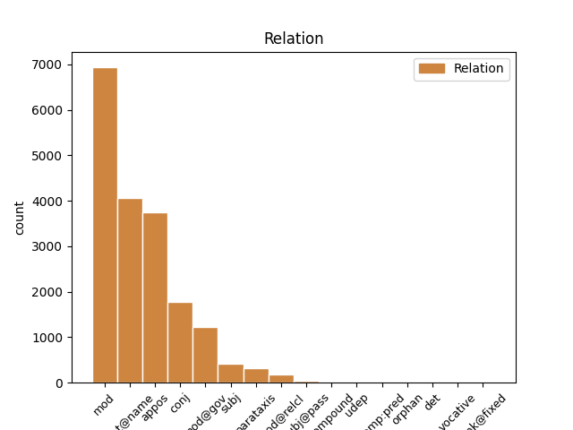
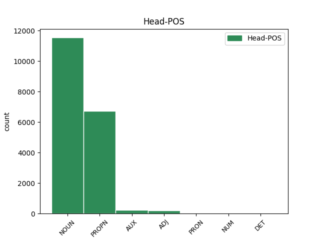
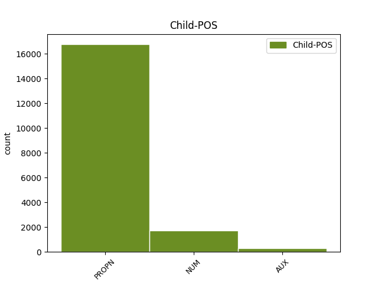

Distribution of features within this leaf



Agreement Rules sorted by frequency.
- When the dependent token is the flat multiword expression(flat@name) of the head token, and the head token is PROPN and the dependent token is PROPN.
1 На _ _ _ _ 0 _ _ _
2 тех _ _ _ _ 0 _ _ _
3 же _ _ _ _ 0 _ _ _
4 состязаниях _ _ _ _ 0 _ _ _
5 он _ _ _ _ 0 _ _ _
6 опередил _ _ _ _ 0 _ _ _
7 в _ _ _ _ 0 _ _ _
8 беге _ _ _ _ 0 _ _ _
9 всех _ _ _ _ 0 _ _ _
10 , _ _ _ _ 0 _ _ _
11 кроме _ _ _ _ 0 _ _ _
12 длинноногого _ _ _ _ 0 _ _ _
13 учителя _ _ _ _ 0 _ _ _
14 математики _ _ _ _ 0 _ _ _
15 Михаила Михаил PROPN _ Animacy=Anim|Case=Gen|Gender=Masc|Number=Sing 0 _ _ _
16 Александровича Александрович PROPN _ Animacy=Anim|Case=Gen|Gender=Masc|Number=Sing 15 flat@name _ SpaceAfter=No
17 . _ _ _ _ 0 _ _ _
1 И _ _ _ _ 0 _ _ _
2 была _ _ _ _ 0 _ _ _
3 смуглая _ _ _ _ 0 _ _ _
4 девочка девочка NOUN _ Animacy=Anim|Case=Nom|Gender=Fem|Number=Sing 0 _ _ _
5 с _ _ _ _ 0 _ _ _
6 безжалостно _ _ _ _ 0 _ _ _
7 исцарапанными _ _ _ _ 0 _ _ _
8 ногами _ _ _ _ 0 _ _ _
9 , _ _ _ _ 0 _ _ _
10 сбитыми _ _ _ _ 0 _ _ _
11 коленями _ _ _ _ 0 _ _ _
12 , _ _ _ _ 0 _ _ _
13 острыми _ _ _ _ 0 _ _ _
14 лопатками _ _ _ _ 0 _ _ _
15 задиры _ _ _ _ 0 _ _ _
16 - _ _ _ _ 0 _ _ _
17 вылитая _ _ _ _ 0 _ _ _
18 Галя Галя PROPN _ Animacy=Anim|Case=Nom|Gender=Fem|Number=Sing 4 appos _ SpaceAfter=No
19 , _ _ _ _ 0 _ _ _
20 и _ _ _ _ 0 _ _ _
21 воспитательница _ _ _ _ 0 _ _ _
22 , _ _ _ _ 0 _ _ _
23 учившая _ _ _ _ 0 _ _ _
24 детей _ _ _ _ 0 _ _ _
25 какой-то _ _ _ _ 0 _ _ _
26 игре _ _ _ _ 0 _ _ _
27 , _ _ _ _ 0 _ _ _
28 на _ _ _ _ 0 _ _ _
29 мгновение _ _ _ _ 0 _ _ _
30 повернула _ _ _ _ 0 _ _ _
31 ко _ _ _ _ 0 _ _ _
32 мне _ _ _ _ 0 _ _ _
33 светлую _ _ _ _ 0 _ _ _
34 лунность _ _ _ _ 0 _ _ _
35 круглого _ _ _ _ 0 _ _ _
36 Муриного _ _ _ _ 0 _ _ _
37 лица _ _ _ _ 0 _ _ _
38 . _ _ _ _ 0 _ _ _
1 Был _ _ _ _ 0 _ _ _
2 ли _ _ _ _ 0 _ _ _
3 в _ _ _ _ 0 _ _ _
4 яви _ _ _ _ 0 _ _ _
5 или _ _ _ _ 0 _ _ _
6 только _ _ _ _ 0 _ _ _
7 приснился _ _ _ _ 0 _ _ _
8 мне _ _ _ _ 0 _ _ _
9 этот _ _ _ _ 0 _ _ _
10 странный _ _ _ _ 0 _ _ _
11 мальчик _ _ _ _ 0 _ _ _
12 , _ _ _ _ 0 _ _ _
13 овеянный _ _ _ _ 0 _ _ _
14 нежностью _ _ _ _ 0 _ _ _
15 и _ _ _ _ 0 _ _ _
16 печалью _ _ _ _ 0 _ _ _
17 нездешности _ _ _ _ 0 _ _ _
18 , _ _ _ _ 0 _ _ _
19 как _ _ _ _ 0 _ _ _
20 Маленький _ _ _ _ 0 _ _ _
21 принц принц NOUN _ Animacy=Anim|Case=Nom|Gender=Masc|Number=Sing 0 _ _ _
22 Антуана Антуан PROPN _ Animacy=Anim|Case=Gen|Gender=Masc|Number=Sing 21 mod _ _
23 де _ _ _ _ 0 _ _ _
24 Сент-Экзюпери _ _ _ _ 0 _ _ _
25 . _ _ _ _ 0 _ _ _
1 Одно один NUM _ Case=Acc|Gender=Neut 3 mod@gov _ _
2 красное _ _ _ _ 0 _ _ _
3 перышко перышко NOUN _ Animacy=Inan|Case=Acc|Gender=Neut|Number=Sing 0 _ _ _
4 Павлов _ _ _ _ 0 _ _ _
5 взял _ _ _ _ 0 _ _ _
6 с _ _ _ _ 0 _ _ _
7 собой _ _ _ _ 0 _ _ _
8 : _ _ _ _ 0 _ _ _
9 он _ _ _ _ 0 _ _ _
10 уже _ _ _ _ 0 _ _ _
11 научил _ _ _ _ 0 _ _ _
12 близнецов _ _ _ _ 0 _ _ _
13 грубости _ _ _ _ 0 _ _ _
14 недоверия _ _ _ _ 0 _ _ _
15 и _ _ _ _ 0 _ _ _
16 потому _ _ _ _ 0 _ _ _
17 нуждался _ _ _ _ 0 _ _ _
18 в _ _ _ _ 0 _ _ _
19 вещественном _ _ _ _ 0 _ _ _
20 доказательстве _ _ _ _ 0 _ _ _
21 . _ _ _ _ 0 _ _ _
1 Волховский _ _ _ _ 0 _ _ _
2 фронт _ _ _ _ 0 _ _ _
3 , _ _ _ _ 0 _ _ _
4 хотя _ _ _ _ 0 _ _ _
5 и _ _ _ _ 0 _ _ _
6 связанный _ _ _ _ 0 _ _ _
7 напрямую _ _ _ _ 0 _ _ _
8 с _ _ _ _ 0 _ _ _
9 Москвой _ _ _ _ 0 _ _ _
10 тремя _ _ _ _ 0 _ _ _
11 железными _ _ _ _ 0 _ _ _
12 дорогами _ _ _ _ 0 _ _ _
13 - _ _ _ _ 0 _ _ _
14 через _ _ _ _ 0 _ _ _
15 Вишеру Вишера PROPN _ Animacy=Inan|Case=Acc|Gender=Fem|Number=Sing 0 _ _ _
16 , _ _ _ _ 0 _ _ _
17 Неболчи Неболчи PROPN _ Animacy=Inan|Case=Acc|Gender=Fem|Number=Plur 15 conj _ _
18 и _ _ _ _ 0 _ _ _
19 Тихвин _ _ _ _ 0 _ _ _
20 , _ _ _ _ 0 _ _ _
21 - _ _ _ _ 0 _ _ _
22 снабжался _ _ _ _ 0 _ _ _
23 плохо _ _ _ _ 0 _ _ _
24 , _ _ _ _ 0 _ _ _
25 словно _ _ _ _ 0 _ _ _
26 ему _ _ _ _ 0 _ _ _
27 полагалось _ _ _ _ 0 _ _ _
28 хоть _ _ _ _ 0 _ _ _
29 в _ _ _ _ 0 _ _ _
30 малой _ _ _ _ 0 _ _ _
31 мере _ _ _ _ 0 _ _ _
32 делить _ _ _ _ 0 _ _ _
33 судьбу _ _ _ _ 0 _ _ _
34 блокадного _ _ _ _ 0 _ _ _
35 Ленинграда _ _ _ _ 0 _ _ _
36 , _ _ _ _ 0 _ _ _
37 который _ _ _ _ 0 _ _ _
38 он _ _ _ _ 0 _ _ _
39 никак _ _ _ _ 0 _ _ _
40 не _ _ _ _ 0 _ _ _
41 мог _ _ _ _ 0 _ _ _
42 освободить _ _ _ _ 0 _ _ _
43 . _ _ _ _ 0 _ _ _
1 Осталась _ _ _ _ 0 _ _ _
2 комната _ _ _ _ 0 _ _ _
3 с _ _ _ _ 0 _ _ _
4 трапецией _ _ _ _ 0 _ _ _
5 , _ _ _ _ 0 _ _ _
6 игрушками _ _ _ _ 0 _ _ _
7 и _ _ _ _ 0 _ _ _
8 пухлыми _ _ _ _ 0 _ _ _
9 томами _ _ _ _ 0 _ _ _
10 " _ _ _ _ 0 _ _ _
11 Трех _ _ _ _ 0 _ _ _
12 мушкетеров _ _ _ _ 0 _ _ _
13 " _ _ _ _ 0 _ _ _
14 ; _ _ _ _ 0 _ _ _
15 остался _ _ _ _ 0 _ _ _
16 двор _ _ _ _ 0 _ _ _
17 с _ _ _ _ 0 _ _ _
18 его _ _ _ _ 0 _ _ _
19 волнующей _ _ _ _ 0 _ _ _
20 и _ _ _ _ 0 _ _ _
21 в _ _ _ _ 0 _ _ _
22 чем-то _ _ _ _ 0 _ _ _
23 главном _ _ _ _ 0 _ _ _
24 недоступной _ _ _ _ 0 _ _ _
25 мне _ _ _ _ 0 _ _ _
26 жизнью _ _ _ _ 0 _ _ _
27 ; _ _ _ _ 0 _ _ _
28 впереди _ _ _ _ 0 _ _ _
29 была _ _ _ _ 0 _ _ _
30 чудесная _ _ _ _ 0 _ _ _
31 акуловская _ _ _ _ 0 _ _ _
32 дача _ _ _ _ 0 _ _ _
33 с _ _ _ _ 0 _ _ _
34 извилистой _ _ _ _ 0 _ _ _
35 Учей _ _ _ _ 0 _ _ _
36 , _ _ _ _ 0 _ _ _
37 дремучим _ _ _ _ 0 _ _ _
38 еловым _ _ _ _ 0 _ _ _
39 бором _ _ _ _ 0 _ _ _
40 , _ _ _ _ 0 _ _ _
41 непролазными _ _ _ _ 0 _ _ _
42 ольшаниками _ _ _ _ 0 _ _ _
43 и _ _ _ _ 0 _ _ _
44 великовозрастным _ _ _ _ 0 _ _ _
45 Колькой Колька PROPN _ Animacy=Inan|Case=Ins|Gender=Masc|Number=Sing 0 _ _ _
46 Шугаевым Шугаев PROPN _ Animacy=Inan|Case=Ins|Gender=Masc|Number=Sing 45 appos _ SpaceAfter=No
47 , _ _ _ _ 0 _ _ _
48 посвящавшим _ _ _ _ 0 _ _ _
49 меня _ _ _ _ 0 _ _ _
50 в _ _ _ _ 0 _ _ _
51 тайное _ _ _ _ 0 _ _ _
52 тайных _ _ _ _ 0 _ _ _
53 . _ _ _ _ 0 _ _ _
1 В _ _ _ _ 0 _ _ _
2 трудную _ _ _ _ 0 _ _ _
3 минуту _ _ _ _ 0 _ _ _
4 жизни _ _ _ _ 0 _ _ _
5 Павлов _ _ _ _ 0 _ _ _
6 убедился _ _ _ _ 0 _ _ _
7 , _ _ _ _ 0 _ _ _
8 что _ _ _ _ 0 _ _ _
9 не _ _ _ _ 0 _ _ _
10 совершил _ _ _ _ 0 _ _ _
11 ошибки _ _ _ _ 0 _ _ _
12 в _ _ _ _ 0 _ _ _
13 то _ _ _ _ 0 _ _ _
14 , _ _ _ _ 0 _ _ _
15 уже _ _ _ _ 0 _ _ _
16 далекое _ _ _ _ 0 _ _ _
17 утро _ _ _ _ 0 _ _ _
18 , _ _ _ _ 0 _ _ _
19 когда _ _ _ _ 0 _ _ _
20 по _ _ _ _ 0 _ _ _
21 одному один NUM _ Case=Dat|Gender=Neut 22 mod _ _
22 движению движение NOUN _ Animacy=Inan|Case=Dat|Gender=Neut|Number=Sing 0 _ _ _
23 круглых _ _ _ _ 0 _ _ _
24 , _ _ _ _ 0 _ _ _
25 сильных _ _ _ _ 0 _ _ _
26 рук _ _ _ _ 0 _ _ _
27 , _ _ _ _ 0 _ _ _
28 медленно _ _ _ _ 0 _ _ _
29 всплывшим _ _ _ _ 0 _ _ _
30 к _ _ _ _ 0 _ _ _
31 тяжелым _ _ _ _ 0 _ _ _
32 волосам _ _ _ _ 0 _ _ _
33 , _ _ _ _ 0 _ _ _
34 угадал _ _ _ _ 0 _ _ _
35 спасительную _ _ _ _ 0 _ _ _
36 мощь _ _ _ _ 0 _ _ _
37 будущей _ _ _ _ 0 _ _ _
38 своей _ _ _ _ 0 _ _ _
39 спутницы _ _ _ _ 0 _ _ _
40 на _ _ _ _ 0 _ _ _
41 радость _ _ _ _ 0 _ _ _
42 и _ _ _ _ 0 _ _ _
43 горе _ _ _ _ 0 _ _ _
44 . _ _ _ _ 0 _ _ _
1 На _ _ _ _ 0 _ _ _
2 этом _ _ _ _ 0 _ _ _
3 пути _ _ _ _ 0 _ _ _
4 уже _ _ _ _ 0 _ _ _
5 сделан _ _ _ _ 0 _ _ _
6 первый _ _ _ _ 0 _ _ _
7 шаг _ _ _ _ 0 _ _ _
8 - _ _ _ _ 0 _ _ _
9 это _ _ _ _ 0 _ _ _
10 интересная _ _ _ _ 0 _ _ _
11 инициатива _ _ _ _ 0 _ _ _
12 по _ _ _ _ 0 _ _ _
13 созданию _ _ _ _ 0 _ _ _
14 Ассоциации _ _ _ _ 0 _ _ _
15 молодых _ _ _ _ 0 _ _ _
16 историков _ _ _ _ 0 _ _ _
17 под _ _ _ _ 0 _ _ _
18 эгидой _ _ _ _ 0 _ _ _
19 ЦК ЦК PROPN _ Animacy=Inan|Case=Gen|Gender=Masc|Number=Sing 0 _ _ _
20 ВЛКСМ ВЛКСМ PROPN _ Animacy=Inan|Case=Gen|Gender=Masc|Number=Sing 19 mod _ SpaceAfter=No
21 , _ _ _ _ 0 _ _ _
22 которая _ _ _ _ 0 _ _ _
23 требует _ _ _ _ 0 _ _ _
24 всяческой _ _ _ _ 0 _ _ _
25 поддержки _ _ _ _ 0 _ _ _
26 . _ _ _ _ 0 _ _ _
1 Прав прав ADJ _ Degree=Pos|Gender=Masc|Number=Sing|Variant=Short 0 _ _ _
2 Евгений Евгений PROPN _ Animacy=Anim|Case=Nom|Gender=Masc|Number=Sing 1 subj _ _
3 Юрьев _ _ _ _ 0 _ _ _
4 : _ _ _ _ 0 _ _ _
5 пожалуй _ _ _ _ 0 _ _ _
6 , _ _ _ _ 0 _ _ _
7 за _ _ _ _ 0 _ _ _
8 последние _ _ _ _ 0 _ _ _
9 десятилетия _ _ _ _ 0 _ _ _
10 никогда _ _ _ _ 0 _ _ _
11 эта _ _ _ _ 0 _ _ _
12 критика _ _ _ _ 0 _ _ _
13 не _ _ _ _ 0 _ _ _
14 была _ _ _ _ 0 _ _ _
15 столь _ _ _ _ 0 _ _ _
16 острой _ _ _ _ 0 _ _ _
17 . _ _ _ _ 0 _ _ _
1 Дарили _ _ _ _ 0 _ _ _
2 дед _ _ _ _ 0 _ _ _
3 , _ _ _ _ 0 _ _ _
4 мама мама NOUN _ Animacy=Anim|Case=Nom|Gender=Fem|Number=Sing 0 _ _ _
5 , _ _ _ _ 0 _ _ _
6 Дашура Дашура PROPN _ Animacy=Anim|Case=Nom|Gender=Fem|Number=Sing 4 conj _ SpaceAfter=No
7 , _ _ _ _ 0 _ _ _
8 отцу _ _ _ _ 0 _ _ _
9 было _ _ _ _ 0 _ _ _
10 не _ _ _ _ 0 _ _ _
11 до _ _ _ _ 0 _ _ _
12 того _ _ _ _ 0 _ _ _
13 , _ _ _ _ 0 _ _ _
14 он _ _ _ _ 0 _ _ _
15 жил _ _ _ _ 0 _ _ _
16 жадно _ _ _ _ 0 _ _ _
17 , _ _ _ _ 0 _ _ _
18 заинтересованно _ _ _ _ 0 _ _ _
19 собственной _ _ _ _ 0 _ _ _
20 , _ _ _ _ 0 _ _ _
21 еще _ _ _ _ 0 _ _ _
22 довольно _ _ _ _ 0 _ _ _
23 молодой _ _ _ _ 0 _ _ _
24 жизнью _ _ _ _ 0 _ _ _
25 ; _ _ _ _ 0 _ _ _
26 к _ _ _ _ 0 _ _ _
27 тому _ _ _ _ 0 _ _ _
28 же _ _ _ _ 0 _ _ _
29 , _ _ _ _ 0 _ _ _
30 как _ _ _ _ 0 _ _ _
31 большинство _ _ _ _ 0 _ _ _
32 молодых _ _ _ _ 0 _ _ _
33 отцов _ _ _ _ 0 _ _ _
34 , _ _ _ _ 0 _ _ _
35 он _ _ _ _ 0 _ _ _
36 не _ _ _ _ 0 _ _ _
37 очень _ _ _ _ 0 _ _ _
38 - _ _ _ _ 0 _ _ _
39 то _ _ _ _ 0 _ _ _
40 представлял _ _ _ _ 0 _ _ _
41 себе _ _ _ _ 0 _ _ _
42 , _ _ _ _ 0 _ _ _
43 что _ _ _ _ 0 _ _ _
44 следует _ _ _ _ 0 _ _ _
45 мне _ _ _ _ 0 _ _ _
46 дарить _ _ _ _ 0 _ _ _
47 : _ _ _ _ 0 _ _ _
48 до _ _ _ _ 0 _ _ _
49 чего _ _ _ _ 0 _ _ _
50 я _ _ _ _ 0 _ _ _
51 дорос _ _ _ _ 0 _ _ _
52 , _ _ _ _ 0 _ _ _
53 недорос _ _ _ _ 0 _ _ _
54 , _ _ _ _ 0 _ _ _
55 а _ _ _ _ 0 _ _ _
56 что _ _ _ _ 0 _ _ _
57 и _ _ _ _ 0 _ _ _
58 перерос _ _ _ _ 0 _ _ _
59 . _ _ _ _ 0 _ _ _
1 Были _ _ _ _ 0 _ _ _
2 и _ _ _ _ 0 _ _ _
3 настоящие _ _ _ _ 0 _ _ _
4 , _ _ _ _ 0 _ _ _
5 великие _ _ _ _ 0 _ _ _
6 , _ _ _ _ 0 _ _ _
7 страшноватые _ _ _ _ 0 _ _ _
8 в _ _ _ _ 0 _ _ _
9 широте _ _ _ _ 0 _ _ _
10 своей _ _ _ _ 0 _ _ _
11 и _ _ _ _ 0 _ _ _
12 затаенном _ _ _ _ 0 _ _ _
13 спокойствии _ _ _ _ 0 _ _ _
14 сибирские _ _ _ _ 0 _ _ _
15 реки река NOUN _ Animacy=Inan|Case=Nom|Gender=Fem|Number=Plur 0 _ _ _
16 : _ _ _ _ 0 _ _ _
17 Обь Обь PROPN _ Animacy=Inan|Case=Nom|Gender=Fem|Number=Sing 15 parataxis _ SpaceAfter=No
18 , _ _ _ _ 0 _ _ _
19 Енисей _ _ _ _ 0 _ _ _
20 , _ _ _ _ 0 _ _ _
21 Иртыш _ _ _ _ 0 _ _ _
22 . _ _ _ _ 0 _ _ _
1 Павлов Павлов PROPN _ Animacy=Anim|Case=Nom|Gender=Masc|Number=Sing 3 subj _ _
2 готов _ _ _ _ 0 _ _ _
3 был быть AUX _ Aspect=Imp|Gender=Masc|Mood=Ind|Number=Sing|Tense=Past|VerbForm=Fin|Voice=Act 0 _ _ _
4 восторгаться _ _ _ _ 0 _ _ _
5 рыцарственным _ _ _ _ 0 _ _ _
6 служением _ _ _ _ 0 _ _ _
7 близнецов _ _ _ _ 0 _ _ _
8 своей _ _ _ _ 0 _ _ _
9 мечте _ _ _ _ 0 _ _ _
10 , _ _ _ _ 0 _ _ _
11 будь _ _ _ _ 0 _ _ _
12 эта _ _ _ _ 0 _ _ _
13 мечта _ _ _ _ 0 _ _ _
14 достижимой _ _ _ _ 0 _ _ _
15 . _ _ _ _ 0 _ _ _
1 В _ _ _ _ 0 _ _ _
2 книге _ _ _ _ 0 _ _ _
3 " _ _ _ _ 0 _ _ _
4 Православие _ _ _ _ 0 _ _ _
5 на _ _ _ _ 0 _ _ _
6 Украине _ _ _ _ 0 _ _ _
7 " _ _ _ _ 0 _ _ _
8 , _ _ _ _ 0 _ _ _
9 вышедшей _ _ _ _ 0 _ _ _
10 в _ _ _ _ 0 _ _ _
11 Киеве _ _ _ _ 0 _ _ _
12 в _ _ _ _ 0 _ _ _
13 1985 _ _ _ _ 0 _ _ _
14 г _ _ _ _ 0 _ _ _
15 . _ _ _ _ 0 _ _ _
16 , _ _ _ _ 0 _ _ _
17 есть _ _ _ _ 0 _ _ _
18 такие _ _ _ _ 0 _ _ _
19 строки _ _ _ _ 0 _ _ _
20 : _ _ _ _ 0 _ _ _
21 " _ _ _ _ 0 _ _ _
22 За _ _ _ _ 0 _ _ _
23 посредничеством _ _ _ _ 0 _ _ _
24 императора _ _ _ _ 0 _ _ _
25 Священной _ _ _ _ 0 _ _ _
26 Римской _ _ _ _ 0 _ _ _
27 империи _ _ _ _ 0 _ _ _
28 Оттона _ _ _ _ 0 _ _ _
29 I _ _ _ _ 0 _ _ _
30 папа _ _ _ _ 0 _ _ _
31 отправил _ _ _ _ 0 _ _ _
32 на _ _ _ _ 0 _ _ _
33 Русь _ _ _ _ 0 _ _ _
34 своих _ _ _ _ 0 _ _ _
35 послов посол NOUN _ Animacy=Anim|Case=Acc|Gender=Masc|Number=Plur 0 _ _ _
36 , _ _ _ _ 0 _ _ _
37 среди _ _ _ _ 0 _ _ _
38 которых _ _ _ _ 0 _ _ _
39 был быть AUX _ Aspect=Imp|Gender=Masc|Mood=Ind|Number=Sing|Tense=Past|VerbForm=Fin|Voice=Act 35 mod@relcl _ _
40 епископ _ _ _ _ 0 _ _ _
41 Адальберт _ _ _ _ 0 _ _ _
42 " _ _ _ _ 0 _ _ _
43 . _ _ _ _ 0 _ _ _
1 Но _ _ _ _ 0 _ _ _
2 , _ _ _ _ 0 _ _ _
3 начиная _ _ _ _ 0 _ _ _
4 с _ _ _ _ 0 _ _ _
5 20-х _ _ _ _ 0 _ _ _
6 годов _ _ _ _ 0 _ _ _
7 , _ _ _ _ 0 _ _ _
8 утвердилось _ _ _ _ 0 _ _ _
9 иное _ _ _ _ 0 _ _ _
10 мнение _ _ _ _ 0 _ _ _
11 : _ _ _ _ 0 _ _ _
12 ВЛКСМ ВЛКСМ PROPN _ Animacy=Inan|Case=Nom|Gender=Masc|Number=Sing 16 subj _ _
13 - _ _ _ _ 0 _ _ _
14 всего _ _ _ _ 0 _ _ _
15 лишь _ _ _ _ 0 _ _ _
16 инструмент инструмент NOUN _ Animacy=Inan|Case=Nom|Gender=Masc|Number=Sing 0 _ _ _
17 в _ _ _ _ 0 _ _ _
18 руках _ _ _ _ 0 _ _ _
19 партии _ _ _ _ 0 _ _ _
20 . _ _ _ _ 0 _ _ _
1 Этот _ _ _ _ 0 _ _ _
2 Договор Договор PROPN _ Animacy=Inan|Case=Nom|Gender=Masc|Number=Sing 3 subj@pass _ _
3 был быть AUX _ Aspect=Imp|Gender=Masc|Mood=Ind|Number=Sing|Tense=Past|VerbForm=Fin|Voice=Act 0 _ _ _
4 подписан _ _ _ _ 0 _ _ _
5 в _ _ _ _ 0 _ _ _
6 1922 _ _ _ _ 0 _ _ _
7 году _ _ _ _ 0 _ _ _
8 РСФСР _ _ _ _ 0 _ _ _
9 , _ _ _ _ 0 _ _ _
10 Украинской _ _ _ _ 0 _ _ _
11 ССР _ _ _ _ 0 _ _ _
12 , _ _ _ _ 0 _ _ _
13 Белорусской _ _ _ _ 0 _ _ _
14 ССР _ _ _ _ 0 _ _ _
15 , _ _ _ _ 0 _ _ _
16 и _ _ _ _ 0 _ _ _
17 Закавказской _ _ _ _ 0 _ _ _
18 Социалистической _ _ _ _ 0 _ _ _
19 Федеративной _ _ _ _ 0 _ _ _
20 Советской _ _ _ _ 0 _ _ _
21 Республикой _ _ _ _ 0 _ _ _
22 , _ _ _ _ 0 _ _ _
23 которая _ _ _ _ 0 _ _ _
24 объединяла _ _ _ _ 0 _ _ _
25 в _ _ _ _ 0 _ _ _
26 своем _ _ _ _ 0 _ _ _
27 составе _ _ _ _ 0 _ _ _
28 Грузию _ _ _ _ 0 _ _ _
29 , _ _ _ _ 0 _ _ _
30 Армению _ _ _ _ 0 _ _ _
31 и _ _ _ _ 0 _ _ _
32 Азербайджан _ _ _ _ 0 _ _ _
33 . _ _ _ _ 0 _ _ _
1 Ответ _ _ _ _ 0 _ _ _
2 дали _ _ _ _ 0 _ _ _
3 ученые _ _ _ _ 0 _ _ _
4 лаборатории _ _ _ _ 0 _ _ _
5 механических _ _ _ _ 0 _ _ _
6 свойств _ _ _ _ 0 _ _ _
7 кристаллов _ _ _ _ 0 _ _ _
8 Института Институт PROPN _ Animacy=Inan|Case=Gen|Gender=Masc|Number=Sing 0 _ _ _
9 кристаллографии _ _ _ _ 0 _ _ _
10 ( _ _ _ _ 0 _ _ _
11 ИКАН ИКАН PROPN _ Animacy=Inan|Case=Nom|Gender=Masc|Number=Sing 8 parataxis _ SpaceAfter=No
12 ) _ _ _ _ 0 _ _ _
13 . _ _ _ _ 0 _ _ _
1 Был быть AUX _ Aspect=Imp|Gender=Masc|Mood=Ind|Number=Sing|Tense=Past|VerbForm=Fin|Voice=Act 0 _ _ _
2 же _ _ _ _ 0 _ _ _
3 у _ _ _ _ 0 _ _ _
4 него _ _ _ _ 0 _ _ _
5 опыт _ _ _ _ 0 _ _ _
6 собственного _ _ _ _ 0 _ _ _
7 детства _ _ _ _ 0 _ _ _
8 , _ _ _ _ 0 _ _ _
9 был быть AUX _ Aspect=Imp|Gender=Masc|Mood=Ind|Number=Sing|Tense=Past|VerbForm=Fin|Voice=Act 1 conj _ _
10 же _ _ _ _ 0 _ _ _
11 он _ _ _ _ 0 _ _ _
12 сам _ _ _ _ 0 _ _ _
13 ребенком _ _ _ _ 0 _ _ _
14 ! _ _ _ _ 0 _ _ _
1 Не _ _ _ _ 0 _ _ _
2 раз раз NOUN _ Animacy=Inan|Case=Acc|Gender=Masc|Number=Sing 0 _ _ _
3 и _ _ _ _ 0 _ _ _
4 не _ _ _ _ 0 _ _ _
5 два два NUM _ Animacy=Inan|Case=Acc|Gender=Masc 2 conj _ _
6 спрашивал _ _ _ _ 0 _ _ _
7 себя _ _ _ _ 0 _ _ _
8 Вавилов _ _ _ _ 0 _ _ _
9 : _ _ _ _ 0 _ _ _
10 правильно _ _ _ _ 0 _ _ _
11 ли _ _ _ _ 0 _ _ _
12 он _ _ _ _ 0 _ _ _
13 поступил _ _ _ _ 0 _ _ _
14 ? _ _ _ _ 0 _ _ _
1 Американская _ _ _ _ 0 _ _ _
2 авиация _ _ _ _ 0 _ _ _
3 накануне _ _ _ _ 0 _ _ _
4 бомбила _ _ _ _ 0 _ _ _
5 районы _ _ _ _ 0 _ _ _
6 на _ _ _ _ 0 _ _ _
7 востоке _ _ _ _ 0 _ _ _
8 Афганистана _ _ _ _ 0 _ _ _
9 , _ _ _ _ 0 _ _ _
10 в _ _ _ _ 0 _ _ _
11 которых _ _ _ _ 0 _ _ _
12 , _ _ _ _ 0 _ _ _
13 как _ _ _ _ 0 _ _ _
14 полагают _ _ _ _ 0 _ _ _
15 в _ _ _ _ 0 _ _ _
16 Вашингтоне _ _ _ _ 0 _ _ _
17 , _ _ _ _ 0 _ _ _
18 расположены _ _ _ _ 0 _ _ _
19 подземные _ _ _ _ 0 _ _ _
20 командные _ _ _ _ 0 _ _ _
21 пункты _ _ _ _ 0 _ _ _
22 Осамы _ _ _ _ 0 _ _ _
23 бен бен NOUN _ Animacy=Anim|Case=Gen|Gender=Masc|Number=Sing 0 _ _ _
24 Ладена Ладен PROPN _ Animacy=Anim|Case=Gen|Gender=Masc|Number=Sing 23 flat@name _ _
25 и _ _ _ _ 0 _ _ _
26 его _ _ _ _ 0 _ _ _
27 сети _ _ _ _ 0 _ _ _
28 " _ _ _ _ 0 _ _ _
29 Аль-Каида _ _ _ _ 0 _ _ _
30 " _ _ _ _ 0 _ _ _
31 . _ _ _ _ 0 _ _ _
1 Это _ _ _ _ 0 _ _ _
2 было _ _ _ _ 0 _ _ _
3 признано _ _ _ _ 0 _ _ _
4 на _ _ _ _ 0 _ _ _
5 международных _ _ _ _ 0 _ _ _
6 симпозиумах _ _ _ _ 0 _ _ _
7 , _ _ _ _ 0 _ _ _
8 это _ _ _ _ 0 _ _ _
9 отметил _ _ _ _ 0 _ _ _
10 и _ _ _ _ 0 _ _ _
11 научный _ _ _ _ 0 _ _ _
12 руководитель _ _ _ _ 0 _ _ _
13 американской _ _ _ _ 0 _ _ _
14 фирмы _ _ _ _ 0 _ _ _
15 " _ _ _ _ 0 _ _ _
16 Тьюбэкспресс _ _ _ _ 0 _ _ _
17 " _ _ _ _ 0 _ _ _
18 доктор _ _ _ _ 0 _ _ _
19 Карстенс _ _ _ _ 0 _ _ _
20 , _ _ _ _ 0 _ _ _
21 побывавший _ _ _ _ 0 _ _ _
22 на _ _ _ _ 0 _ _ _
23 опытных _ _ _ _ 0 _ _ _
24 полигонах _ _ _ _ 0 _ _ _
25 в _ _ _ _ 0 _ _ _
26 Орехово-Зуеве Орехово-Зуево PROPN _ Animacy=Inan|Case=Loc|Gender=Neut|Number=Sing 0 _ _ _
27 , _ _ _ _ 0 _ _ _
28 где _ _ _ _ 0 _ _ _
29 в _ _ _ _ 0 _ _ _
30 1975 _ _ _ _ 0 _ _ _
31 году _ _ _ _ 0 _ _ _
32 было быть AUX _ Aspect=Imp|Gender=Neut|Mood=Ind|Number=Sing|Tense=Past|VerbForm=Fin|Voice=Act 26 mod@relcl _ _
33 создано _ _ _ _ 0 _ _ _
34 первое _ _ _ _ 0 _ _ _
35 в _ _ _ _ 0 _ _ _
36 мире _ _ _ _ 0 _ _ _
37 производство _ _ _ _ 0 _ _ _
38 специальных _ _ _ _ 0 _ _ _
39 труб _ _ _ _ 0 _ _ _
40 , _ _ _ _ 0 _ _ _
41 контейнеров _ _ _ _ 0 _ _ _
42 , _ _ _ _ 0 _ _ _
43 пневмовозов _ _ _ _ 0 _ _ _
44 и _ _ _ _ 0 _ _ _
45 прочего _ _ _ _ 0 _ _ _
46 оборудования _ _ _ _ 0 _ _ _
47 для _ _ _ _ 0 _ _ _
48 нового _ _ _ _ 0 _ _ _
49 вида _ _ _ _ 0 _ _ _
50 транспорта _ _ _ _ 0 _ _ _
51 . _ _ _ _ 0 _ _ _
1 Но _ _ _ _ 0 _ _ _
2 через _ _ _ _ 0 _ _ _
3 какое-то _ _ _ _ 0 _ _ _
4 время _ _ _ _ 0 _ _ _
5 раздался _ _ _ _ 0 _ _ _
6 взрыв _ _ _ _ 0 _ _ _
7 , _ _ _ _ 0 _ _ _
8 все _ _ _ _ 0 _ _ _
9 заполыхало _ _ _ _ 0 _ _ _
10 , _ _ _ _ 0 _ _ _
11 и _ _ _ _ 0 _ _ _
12 взрывы _ _ _ _ 0 _ _ _
13 стали _ _ _ _ 0 _ _ _
14 следовать _ _ _ _ 0 _ _ _
15 один один NUM _ Case=Nom|Gender=Masc 17 mod@gov _ _
16 за _ _ _ _ 0 _ _ _
17 другим другой ADJ _ Case=Ins|Degree=Pos|Gender=Masc|Number=Sing 0 _ _ _
18 . _ _ _ _ 0 _ _ _
1 А _ _ _ _ 0 _ _ _
2 старшие _ _ _ _ 0 _ _ _
3 , _ _ _ _ 0 _ _ _
4 ходячие _ _ _ _ 0 _ _ _
5 - _ _ _ _ 0 _ _ _
6 года _ _ _ _ 0 _ _ _
7 по _ _ _ _ 0 _ _ _
8 полтора полтора NUM _ Case=Acc|Gender=Masc 0 _ _ _
9 - _ _ _ _ 0 _ _ _
10 два два NUM _ Animacy=Inan|Case=Acc|Gender=Masc 8 mod@gov _ SpaceAfter=No
11 , _ _ _ _ 0 _ _ _
12 - _ _ _ _ 0 _ _ _
13 как _ _ _ _ 0 _ _ _
14 они _ _ _ _ 0 _ _ _
15 жадно _ _ _ _ 0 _ _ _
16 толпились _ _ _ _ 0 _ _ _
17 вокруг _ _ _ _ 0 _ _ _
18 рояля _ _ _ _ 0 _ _ _
19 ! _ _ _ _ 0 _ _ _
1 Он _ _ _ _ 0 _ _ _
2 увидел _ _ _ _ 0 _ _ _
3 сказочное _ _ _ _ 0 _ _ _
4 поле _ _ _ _ 0 _ _ _
5 гигантской _ _ _ _ 0 _ _ _
6 ржи ржа NOUN _ Animacy=Inan|Case=Gen|Gender=Fem|Number=Sing 0 _ _ _
7 : _ _ _ _ 0 _ _ _
8 высотой _ _ _ _ 0 _ _ _
9 она _ _ _ _ 0 _ _ _
10 была быть AUX _ Aspect=Imp|Gender=Fem|Mood=Ind|Number=Sing|Tense=Past|VerbForm=Fin|Voice=Act 6 parataxis _ _
11 чуть _ _ _ _ 0 _ _ _
12 ли _ _ _ _ 0 _ _ _
13 не _ _ _ _ 0 _ _ _
14 в _ _ _ _ 0 _ _ _
15 рост _ _ _ _ 0 _ _ _
16 человека _ _ _ _ 0 _ _ _
17 , _ _ _ _ 0 _ _ _
18 с _ _ _ _ 0 _ _ _
19 толстым _ _ _ _ 0 _ _ _
20 неполегающим _ _ _ _ 0 _ _ _
21 стеблем _ _ _ _ 0 _ _ _
22 , _ _ _ _ 0 _ _ _
23 необыкновенно _ _ _ _ 0 _ _ _
24 крупными _ _ _ _ 0 _ _ _
25 колосьями _ _ _ _ 0 _ _ _
26 и _ _ _ _ 0 _ _ _
27 зернами _ _ _ _ 0 _ _ _
28 . _ _ _ _ 0 _ _ _
1 - _ _ _ _ 0 _ _ _
2 На _ _ _ _ 0 _ _ _
3 практике _ _ _ _ 0 _ _ _
4 этот _ _ _ _ 0 _ _ _
5 принцип _ _ _ _ 0 _ _ _
6 был _ _ _ _ 0 _ _ _
7 реализован _ _ _ _ 0 _ _ _
8 , _ _ _ _ 0 _ _ _
9 можно _ _ _ _ 0 _ _ _
10 сказать _ _ _ _ 0 _ _ _
11 , _ _ _ _ 0 _ _ _
12 случайно _ _ _ _ 0 _ _ _
13 , _ _ _ _ 0 _ _ _
14 - _ _ _ _ 0 _ _ _
15 рассказывает _ _ _ _ 0 _ _ _
16 один один NUM _ Case=Nom|Gender=Masc 0 _ _ _
17 из _ _ _ _ 0 _ _ _
18 создателей _ _ _ _ 0 _ _ _
19 таких _ _ _ _ 0 _ _ _
20 станков _ _ _ _ 0 _ _ _
21 , _ _ _ _ 0 _ _ _
22 доктор _ _ _ _ 0 _ _ _
23 технических _ _ _ _ 0 _ _ _
24 наук _ _ _ _ 0 _ _ _
25 П. П. PROPN _ Animacy=Anim|Case=Nom|Gender=Masc|Number=Sing 16 appos _ _
26 М. _ _ _ _ 0 _ _ _
27 Чернянский _ _ _ _ 0 _ _ _
28 . _ _ _ _ 0 _ _ _
1 Довольно _ _ _ _ 0 _ _ _
2 болтать _ _ _ _ 0 _ _ _
3 , _ _ _ _ 0 _ _ _
4 ешьте _ _ _ _ 0 _ _ _
5 ! _ _ _ _ 0 _ _ _
6 - _ _ _ _ 0 _ _ _
7 непривычно _ _ _ _ 0 _ _ _
8 резко _ _ _ _ 0 _ _ _
9 сказала _ _ _ _ 0 _ _ _
10 мать _ _ _ _ 0 _ _ _
11 , _ _ _ _ 0 _ _ _
12 и _ _ _ _ 0 _ _ _
13 Павлов _ _ _ _ 0 _ _ _
14 понял _ _ _ _ 0 _ _ _
15 , _ _ _ _ 0 _ _ _
16 что _ _ _ _ 0 _ _ _
17 она _ _ _ _ 0 _ _ _
18 тоже _ _ _ _ 0 _ _ _
19 не _ _ _ _ 0 _ _ _
20 в _ _ _ _ 0 _ _ _
21 первый _ _ _ _ 0 _ _ _
22 раз _ _ _ _ 0 _ _ _
23 слышит _ _ _ _ 0 _ _ _
24 о _ _ _ _ 0 _ _ _
25 зеленой _ _ _ _ 0 _ _ _
26 птице _ _ _ _ 0 _ _ _
27 с _ _ _ _ 0 _ _ _
28 красной _ _ _ _ 0 _ _ _
29 головой _ _ _ _ 0 _ _ _
30 , _ _ _ _ 0 _ _ _
31 и _ _ _ _ 0 _ _ _
32 эта _ _ _ _ 0 _ _ _
33 назойливая _ _ _ _ 0 _ _ _
34 выдумка _ _ _ _ 0 _ _ _
35 раздражает _ _ _ _ 0 _ _ _
36 ее _ _ _ _ 0 _ _ _
37 , _ _ _ _ 0 _ _ _
38 как _ _ _ _ 0 _ _ _
39 заботит _ _ _ _ 0 _ _ _
40 и _ _ _ _ 0 _ _ _
41 огорчает _ _ _ _ 0 _ _ _
42 его он PRON _ Case=Acc|Gender=Masc|Number=Sing|Person=3 0 _ _ _
43 , _ _ _ _ 0 _ _ _
44 Павлова Павлов PROPN _ Animacy=Anim|Case=Gen|Gender=Masc|Number=Sing 42 appos _ SpaceAfter=No
45 . _ _ _ _ 0 _ _ _
1 Одно один NUM _ Case=Nom|Gender=Neut 6 subj _ _
2 из _ _ _ _ 0 _ _ _
3 таких _ _ _ _ 0 _ _ _
4 направлений _ _ _ _ 0 _ _ _
5 - _ _ _ _ 0 _ _ _
6 получение получение NOUN _ Animacy=Inan|Case=Nom|Gender=Neut|Number=Sing 0 _ _ _
7 в _ _ _ _ 0 _ _ _
8 космосе _ _ _ _ 0 _ _ _
9 материалов _ _ _ _ 0 _ _ _
10 с _ _ _ _ 0 _ _ _
11 уникальными _ _ _ _ 0 _ _ _
12 свойствами _ _ _ _ 0 _ _ _
13 , _ _ _ _ 0 _ _ _
14 недостижимыми _ _ _ _ 0 _ _ _
15 в _ _ _ _ 0 _ _ _
16 земных _ _ _ _ 0 _ _ _
17 условиях _ _ _ _ 0 _ _ _
18 . _ _ _ _ 0 _ _ _
1 Одно один NUM _ Case=Nom|Gender=Neut 2 subj _ _
2 плохо плохой ADJ _ Degree=Pos|Gender=Neut|Number=Sing|Variant=Short 0 _ _ _
3 - _ _ _ _ 0 _ _ _
4 всегда _ _ _ _ 0 _ _ _
5 мешало _ _ _ _ 0 _ _ _
6 трение _ _ _ _ 0 _ _ _
7 . _ _ _ _ 0 _ _ _
1 В _ _ _ _ 0 _ _ _
2 Москве _ _ _ _ 0 _ _ _
3 , _ _ _ _ 0 _ _ _
4 в _ _ _ _ 0 _ _ _
5 Театре _ _ _ _ 0 _ _ _
6 на _ _ _ _ 0 _ _ _
7 Сретенке _ _ _ _ 0 _ _ _
8 , _ _ _ _ 0 _ _ _
9 при _ _ _ _ 0 _ _ _
10 большом _ _ _ _ 0 _ _ _
11 скоплении _ _ _ _ 0 _ _ _
12 VIP ВИП PROPN _ Animacy=Anim|Case=Nom|Gender=Masc|Number=Sing 14 compound _ SpaceAfter=No
13 - _ _ _ _ 0 _ _ _
14 гостей гость NOUN _ Animacy=Anim|Case=Gen|Gender=Masc|Number=Plur 0 _ _ _
15 состоялась _ _ _ _ 0 _ _ _
16 российская _ _ _ _ 0 _ _ _
17 презентация _ _ _ _ 0 _ _ _
18 нового _ _ _ _ 0 _ _ _
19 Mercedes _ _ _ _ 0 _ _ _
20 Benz _ _ _ _ 0 _ _ _
21 E _ _ _ _ 0 _ _ _
22 - _ _ _ _ 0 _ _ _
23 класса _ _ _ _ 0 _ _ _
24 . _ _ _ _ 0 _ _ _
1 Матери _ _ _ _ 0 _ _ _
2 фамилия _ _ _ _ 0 _ _ _
3 была быть AUX _ Aspect=Imp|Gender=Fem|Mood=Ind|Number=Sing|Tense=Past|VerbForm=Fin|Voice=Act 0 _ _ _
4 Делянкина Делянкина PROPN _ Animacy=Inan|Case=Nom|Gender=Fem|Number=Sing 3 comp:pred _ SpaceAfter=No
5 , _ _ _ _ 0 _ _ _
6 его _ _ _ _ 0 _ _ _
7 - _ _ _ _ 0 _ _ _
8 Гарусов _ _ _ _ 0 _ _ _
9 , _ _ _ _ 0 _ _ _
10 по _ _ _ _ 0 _ _ _
11 отцу _ _ _ _ 0 _ _ _
12 . _ _ _ _ 0 _ _ _
1 Одна один NUM _ Case=Nom|Gender=Fem 4 subj@pass _ _
2 из _ _ _ _ 0 _ _ _
3 них _ _ _ _ 0 _ _ _
4 была быть AUX _ Aspect=Imp|Gender=Fem|Mood=Ind|Number=Sing|Tense=Past|VerbForm=Fin|Voice=Act 0 _ _ _
5 доставлена _ _ _ _ 0 _ _ _
6 в _ _ _ _ 0 _ _ _
7 больницу _ _ _ _ 0 _ _ _
8 скорой _ _ _ _ 0 _ _ _
9 помощи _ _ _ _ 0 _ _ _
10 . _ _ _ _ 0 _ _ _
1 И _ _ _ _ 0 _ _ _
2 здесь _ _ _ _ 0 _ _ _
3 незримый _ _ _ _ 0 _ _ _
4 стеклянный _ _ _ _ 0 _ _ _
5 купол _ _ _ _ 0 _ _ _
6 отделял _ _ _ _ 0 _ _ _
7 их _ _ _ _ 0 _ _ _
8 от _ _ _ _ 0 _ _ _
9 зрителей _ _ _ _ 0 _ _ _
10 , _ _ _ _ 0 _ _ _
11 от _ _ _ _ 0 _ _ _
12 всего все PRON _ Animacy=Inan|Case=Gen|Gender=Neut|Number=Sing 0 _ _ _
13 , _ _ _ _ 0 _ _ _
14 что _ _ _ _ 0 _ _ _
15 не _ _ _ _ 0 _ _ _
16 было быть AUX _ Aspect=Imp|Gender=Neut|Mood=Ind|Number=Sing|Tense=Past|VerbForm=Fin|Voice=Act 12 mod@relcl _ _
17 их _ _ _ _ 0 _ _ _
18 миром _ _ _ _ 0 _ _ _
19 . _ _ _ _ 0 _ _ _
1 Может _ _ _ _ 0 _ _ _
2 быть _ _ _ _ 0 _ _ _
3 , _ _ _ _ 0 _ _ _
4 это _ _ _ _ 0 _ _ _
5 был _ _ _ _ 0 _ _ _
6 бы _ _ _ _ 0 _ _ _
7 Жуков _ _ _ _ 0 _ _ _
8 , _ _ _ _ 0 _ _ _
9 потому _ _ _ _ 0 _ _ _
10 что _ _ _ _ 0 _ _ _
11 , _ _ _ _ 0 _ _ _
12 если _ _ _ _ 0 _ _ _
13 бы _ _ _ _ 0 _ _ _
14 дело _ _ _ _ 0 _ _ _
15 дошло _ _ _ _ 0 _ _ _
16 до _ _ _ _ 0 _ _ _
17 того _ _ _ _ 0 _ _ _
18 , _ _ _ _ 0 _ _ _
19 что _ _ _ _ 0 _ _ _
20 Берия _ _ _ _ 0 _ _ _
21 ликвидировал _ _ _ _ 0 _ _ _
22 бы _ _ _ _ 0 _ _ _
23 Хрущёва _ _ _ _ 0 _ _ _
24 , _ _ _ _ 0 _ _ _
25 Маленкова _ _ _ _ 0 _ _ _
26 , _ _ _ _ 0 _ _ _
27 Молотова _ _ _ _ 0 _ _ _
28 и _ _ _ _ 0 _ _ _
29 прочих _ _ _ _ 0 _ _ _
30 , _ _ _ _ 0 _ _ _
31 то _ _ _ _ 0 _ _ _
32 тогда _ _ _ _ 0 _ _ _
33 его _ _ _ _ 0 _ _ _
34 можно _ _ _ _ 0 _ _ _
35 было _ _ _ _ 0 _ _ _
36 бы _ _ _ _ 0 _ _ _
37 обвинить _ _ _ _ 0 _ _ _
38 в _ _ _ _ 0 _ _ _
39 том то PRON _ Animacy=Inan|Case=Loc|Gender=Neut|Number=Sing 0 _ _ _
40 , _ _ _ _ 0 _ _ _
41 в _ _ _ _ 0 _ _ _
42 чём _ _ _ _ 0 _ _ _
43 в _ _ _ _ 0 _ _ _
44 свое _ _ _ _ 0 _ _ _
45 время _ _ _ _ 0 _ _ _
46 можно _ _ _ _ 0 _ _ _
47 было быть AUX _ Aspect=Imp|Gender=Neut|Mood=Ind|Number=Sing|Tense=Past|VerbForm=Fin|Voice=Act 39 mod _ _
48 обвинить _ _ _ _ 0 _ _ _
49 Сталина _ _ _ _ 0 _ _ _
50 . _ _ _ _ 0 _ _ _
1 Джон Джон PROPN _ Animacy=Anim|Case=Nom|Gender=Masc|Number=Sing 0 _ _ _
2 Хантер _ _ _ _ 0 _ _ _
3 ( _ _ _ _ 0 _ _ _
4 в _ _ _ _ 0 _ _ _
5 русской _ _ _ _ 0 _ _ _
6 литературе _ _ _ _ 0 _ _ _
7 его _ _ _ _ 0 _ _ _
8 часто _ _ _ _ 0 _ _ _
9 называют _ _ _ _ 0 _ _ _
10 Гунтером _ _ _ _ 0 _ _ _
11 ) _ _ _ _ 0 _ _ _
12 , _ _ _ _ 0 _ _ _
13 один один NUM _ Case=Nom|Gender=Masc 1 mod@gov _ _
14 из _ _ _ _ 0 _ _ _
15 самых _ _ _ _ 0 _ _ _
16 авторитетных _ _ _ _ 0 _ _ _
17 английских _ _ _ _ 0 _ _ _
18 врачей _ _ _ _ 0 _ _ _
19 того _ _ _ _ 0 _ _ _
20 времени _ _ _ _ 0 _ _ _
21 , _ _ _ _ 0 _ _ _
22 был _ _ _ _ 0 _ _ _
23 убежденным _ _ _ _ 0 _ _ _
24 сторонником _ _ _ _ 0 _ _ _
25 второй _ _ _ _ 0 _ _ _
26 теории _ _ _ _ 0 _ _ _
27 . _ _ _ _ 0 _ _ _
1 Прокурора _ _ _ _ 0 _ _ _
2 это _ _ _ _ 0 _ _ _
3 заявление _ _ _ _ 0 _ _ _
4 ( _ _ _ _ 0 _ _ _
5 а _ _ _ _ 0 _ _ _
6 также _ _ _ _ 0 _ _ _
7 тот _ _ _ _ 0 _ _ _
8 факт _ _ _ _ 0 _ _ _
9 , _ _ _ _ 0 _ _ _
10 что _ _ _ _ 0 _ _ _
11 ни _ _ _ _ 0 _ _ _
12 у _ _ _ _ 0 _ _ _
13 одного один NUM _ Case=Gen|Gender=Masc 14 mod _ _
14 подопытного подопытный ADJ _ Case=Gen|Degree=Pos|Gender=Masc|Number=Sing 0 _ _ _
15 проба _ _ _ _ 0 _ _ _
16 не _ _ _ _ 0 _ _ _
17 вызвала _ _ _ _ 0 _ _ _
18 болезненных _ _ _ _ 0 _ _ _
19 последствий _ _ _ _ 0 _ _ _
20 ) _ _ _ _ 0 _ _ _
21 удовлетворило _ _ _ _ 0 _ _ _
22 , _ _ _ _ 0 _ _ _
23 и _ _ _ _ 0 _ _ _
24 дело _ _ _ _ 0 _ _ _
25 возбуждать _ _ _ _ 0 _ _ _
26 не _ _ _ _ 0 _ _ _
27 стали _ _ _ _ 0 _ _ _
28 . _ _ _ _ 0 _ _ _
1 Мое _ _ _ _ 0 _ _ _
2 сердце _ _ _ _ 0 _ _ _
3 , _ _ _ _ 0 _ _ _
4 моя _ _ _ _ 0 _ _ _
5 боль _ _ _ _ 0 _ _ _
6 неизменно _ _ _ _ 0 _ _ _
7 принадлежали _ _ _ _ 0 _ _ _
8 второму второй ADJ _ Case=Dat|Degree=Pos|Gender=Masc|Number=Sing 0 _ _ _
9 : _ _ _ _ 0 _ _ _
10 не _ _ _ _ 0 _ _ _
11 Пушкину Пушкин PROPN _ Animacy=Anim|Case=Dat|Gender=Masc|Number=Sing 8 parataxis _ SpaceAfter=No
12 , _ _ _ _ 0 _ _ _
13 а _ _ _ _ 0 _ _ _
14 Лермонтову _ _ _ _ 0 _ _ _
15 , _ _ _ _ 0 _ _ _
16 не _ _ _ _ 0 _ _ _
17 Толстому _ _ _ _ 0 _ _ _
18 , _ _ _ _ 0 _ _ _
19 а _ _ _ _ 0 _ _ _
20 Достоевскому _ _ _ _ 0 _ _ _
21 , _ _ _ _ 0 _ _ _
22 не _ _ _ _ 0 _ _ _
23 Алехину _ _ _ _ 0 _ _ _
24 , _ _ _ _ 0 _ _ _
25 а _ _ _ _ 0 _ _ _
26 Капабланке _ _ _ _ 0 _ _ _
27 , _ _ _ _ 0 _ _ _
28 не _ _ _ _ 0 _ _ _
29 Качалову _ _ _ _ 0 _ _ _
30 , _ _ _ _ 0 _ _ _
31 а _ _ _ _ 0 _ _ _
32 Леонидову _ _ _ _ 0 _ _ _
33 , _ _ _ _ 0 _ _ _
34 не _ _ _ _ 0 _ _ _
35 Козловскому _ _ _ _ 0 _ _ _
36 , _ _ _ _ 0 _ _ _
37 а _ _ _ _ 0 _ _ _
38 Лемешеву _ _ _ _ 0 _ _ _
39 . _ _ _ _ 0 _ _ _
1 Выстрелов _ _ _ _ 0 _ _ _
2 он _ _ _ _ 0 _ _ _
3 не _ _ _ _ 0 _ _ _
4 боялся _ _ _ _ 0 _ _ _
5 , _ _ _ _ 0 _ _ _
6 его _ _ _ _ 0 _ _ _
7 смущало _ _ _ _ 0 _ _ _
8 , _ _ _ _ 0 _ _ _
9 что _ _ _ _ 0 _ _ _
10 от _ _ _ _ 0 _ _ _
11 него _ _ _ _ 0 _ _ _
12 падает _ _ _ _ 0 _ _ _
13 не _ _ _ _ 0 _ _ _
14 одна один NUM _ Case=Nom|Gender=Fem 0 _ _ _
15 , _ _ _ _ 0 _ _ _
16 а _ _ _ _ 0 _ _ _
17 две два NUM _ Case=Nom|Gender=Fem 14 conj _ _
18 тени _ _ _ _ 0 _ _ _
19 , _ _ _ _ 0 _ _ _
20 и _ _ _ _ 0 _ _ _
21 обе _ _ _ _ 0 _ _ _
22 - _ _ _ _ 0 _ _ _
23 голубые _ _ _ _ 0 _ _ _
24 . _ _ _ _ 0 _ _ _
1 Д. Д. PROPN _ Animacy=Anim|Case=Nom|Gender=Masc|Number=Sing 5 subj _ SpaceAfter=No
2 В. _ _ _ _ 0 _ _ _
3 Редозубов _ _ _ _ 0 _ _ _
4 - _ _ _ _ 0 _ _ _
5 один один NUM _ Case=Nom|Gender=Masc 0 _ _ _
6 из _ _ _ _ 0 _ _ _
7 основателей _ _ _ _ 0 _ _ _
8 мерзлотоведения _ _ _ _ 0 _ _ _
9 . _ _ _ _ 0 _ _ _
1 Эксперт _ _ _ _ 0 _ _ _
2 Горбачев Горбачев PROPN _ Animacy=Anim|Case=Nom|Gender=Masc|Number=Sing 4 compound _ SpaceAfter=No
3 - _ _ _ _ 0 _ _ _
4 Фонда Фонд PROPN _ Animacy=Inan|Case=Gen|Gender=Masc|Number=Sing 0 _ _ _
5 Андрей _ _ _ _ 0 _ _ _
6 Рябов _ _ _ _ 0 _ _ _
7 в _ _ _ _ 0 _ _ _
8 интервью _ _ _ _ 0 _ _ _
9 " _ _ _ _ 0 _ _ _
10 Итогам _ _ _ _ 0 _ _ _
11 " _ _ _ _ 0 _ _ _
12 сравнивает _ _ _ _ 0 _ _ _
13 нынешнюю _ _ _ _ 0 _ _ _
14 ситуацию _ _ _ _ 0 _ _ _
15 с _ _ _ _ 0 _ _ _
16 кризисом _ _ _ _ 0 _ _ _
17 1998 _ _ _ _ 0 _ _ _
18 года _ _ _ _ 0 _ _ _
19 , _ _ _ _ 0 _ _ _
20 выделяя _ _ _ _ 0 _ _ _
21 два _ _ _ _ 0 _ _ _
22 существенных _ _ _ _ 0 _ _ _
23 отличия _ _ _ _ 0 _ _ _
24 . _ _ _ _ 0 _ _ _
1 Все _ _ _ _ 0 _ _ _
2 было _ _ _ _ 0 _ _ _
3 по _ _ _ _ 0 _ _ _
4 карточкам _ _ _ _ 0 _ _ _
5 , _ _ _ _ 0 _ _ _
6 но _ _ _ _ 0 _ _ _
7 мамина _ _ _ _ 0 _ _ _
8 знакомая _ _ _ _ 0 _ _ _
9 , _ _ _ _ 0 _ _ _
10 работавшая _ _ _ _ 0 _ _ _
11 кассиршей _ _ _ _ 0 _ _ _
12 в _ _ _ _ 0 _ _ _
13 столовой _ _ _ _ 0 _ _ _
14 , _ _ _ _ 0 _ _ _
15 иногда _ _ _ _ 0 _ _ _
16 давала _ _ _ _ 0 _ _ _
17 мне _ _ _ _ 0 _ _ _
18 суп _ _ _ _ 0 _ _ _
19 в _ _ _ _ 0 _ _ _
20 железной _ _ _ _ 0 _ _ _
21 тарелке _ _ _ _ 0 _ _ _
22 или _ _ _ _ 0 _ _ _
23 что-то _ _ _ _ 0 _ _ _
24 сиреневое _ _ _ _ 0 _ _ _
25 и _ _ _ _ 0 _ _ _
26 холодное холодный ADJ _ Case=Acc|Degree=Pos|Gender=Neut|Number=Sing 0 _ _ _
27 , _ _ _ _ 0 _ _ _
28 это _ _ _ _ 0 _ _ _
29 было быть AUX _ Aspect=Imp|Gender=Neut|Mood=Ind|Number=Sing|Tense=Past|VerbForm=Fin|Voice=Act 26 parataxis _ _
30 мороженое _ _ _ _ 0 _ _ _
31 . _ _ _ _ 0 _ _ _
1 Все _ _ _ _ 0 _ _ _
2 это _ _ _ _ 0 _ _ _
3 длилось _ _ _ _ 0 _ _ _
4 мгновение _ _ _ _ 0 _ _ _
5 , _ _ _ _ 0 _ _ _
6 было _ _ _ _ 0 _ _ _
7 очень _ _ _ _ 0 _ _ _
8 темно _ _ _ _ 0 _ _ _
9 и _ _ _ _ 0 _ _ _
10 , _ _ _ _ 0 _ _ _
11 конечно _ _ _ _ 0 _ _ _
12 , _ _ _ _ 0 _ _ _
13 страшно страшный ADJ _ Degree=Pos|Gender=Neut|Number=Sing|Variant=Short 0 _ _ _
14 , _ _ _ _ 0 _ _ _
15 каково _ _ _ _ 0 _ _ _
16 же _ _ _ _ 0 _ _ _
17 было быть AUX _ Aspect=Imp|Gender=Neut|Mood=Ind|Number=Sing|Tense=Past|VerbForm=Fin|Voice=Act 13 conj _ _
18 наше _ _ _ _ 0 _ _ _
19 изумление _ _ _ _ 0 _ _ _
20 , _ _ _ _ 0 _ _ _
21 когда _ _ _ _ 0 _ _ _
22 утром _ _ _ _ 0 _ _ _
23 Федорцов _ _ _ _ 0 _ _ _
24 нашел _ _ _ _ 0 _ _ _
25 в _ _ _ _ 0 _ _ _
26 углу _ _ _ _ 0 _ _ _
27 убитую _ _ _ _ 0 _ _ _
28 моим _ _ _ _ 0 _ _ _
29 ботинком _ _ _ _ 0 _ _ _
30 мышь _ _ _ _ 0 _ _ _
31 . _ _ _ _ 0 _ _ _
1 Никому _ _ _ _ 0 _ _ _
2 он _ _ _ _ 0 _ _ _
3 не _ _ _ _ 0 _ _ _
4 был _ _ _ _ 0 _ _ _
5 особенно _ _ _ _ 0 _ _ _
6 нужен _ _ _ _ 0 _ _ _
7 - _ _ _ _ 0 _ _ _
8 он _ _ _ _ 0 _ _ _
9 как _ _ _ _ 0 _ _ _
10 он он PRON _ Case=Nom|Gender=Masc|Number=Sing|Person=3 0 _ _ _
11 , _ _ _ _ 0 _ _ _
12 лично _ _ _ _ 0 _ _ _
13 как _ _ _ _ 0 _ _ _
14 Гарусов Гарусов PROPN _ Animacy=Anim|Case=Nom|Gender=Masc|Number=Sing 10 conj _ SpaceAfter=No
15 . _ _ _ _ 0 _ _ _
1 Например _ _ _ _ 0 _ _ _
2 , _ _ _ _ 0 _ _ _
3 Дмитрий Дмитрий PROPN _ Animacy=Anim|Case=Nom|Gender=Masc|Number=Sing 0 _ _ _
4 Менделеев _ _ _ _ 0 _ _ _
5 , _ _ _ _ 0 _ _ _
6 бывший быть AUX _ Aspect=Imp|Case=Nom|Gender=Masc|Number=Sing|Tense=Past|VerbForm=Part|Voice=Act 3 mod _ _
7 не _ _ _ _ 0 _ _ _
8 только _ _ _ _ 0 _ _ _
9 химиком _ _ _ _ 0 _ _ _
10 , _ _ _ _ 0 _ _ _
11 но _ _ _ _ 0 _ _ _
12 и _ _ _ _ 0 _ _ _
13 видным _ _ _ _ 0 _ _ _
14 теоретиком _ _ _ _ 0 _ _ _
15 промышленного _ _ _ _ 0 _ _ _
16 развития _ _ _ _ 0 _ _ _
17 , _ _ _ _ 0 _ _ _
18 предполагал _ _ _ _ 0 _ _ _
19 , _ _ _ _ 0 _ _ _
20 что _ _ _ _ 0 _ _ _
21 русская _ _ _ _ 0 _ _ _
22 промышленность _ _ _ _ 0 _ _ _
23 лучше _ _ _ _ 0 _ _ _
24 бы _ _ _ _ 0 _ _ _
25 развивалась _ _ _ _ 0 _ _ _
26 не _ _ _ _ 0 _ _ _
27 капиталистически _ _ _ _ 0 _ _ _
28 , _ _ _ _ 0 _ _ _
29 а _ _ _ _ 0 _ _ _
30 за _ _ _ _ 0 _ _ _
31 счет _ _ _ _ 0 _ _ _
32 " _ _ _ _ 0 _ _ _
33 складочного _ _ _ _ 0 _ _ _
34 капитала _ _ _ _ 0 _ _ _
35 " _ _ _ _ 0 _ _ _
36 . _ _ _ _ 0 _ _ _
1 Синергизм _ _ _ _ 0 _ _ _
2 хемолюминесценции _ _ _ _ 0 _ _ _
3 можно _ _ _ _ 0 _ _ _
4 было быть AUX _ Aspect=Imp|Gender=Neut|Mood=Ind|Number=Sing|Tense=Past|VerbForm=Fin|Voice=Act 0 _ _ _
5 наблюдать _ _ _ _ 0 _ _ _
6 при _ _ _ _ 0 _ _ _
7 исчезающе _ _ _ _ 0 _ _ _
8 малых _ _ _ _ 0 _ _ _
9 концентрациях _ _ _ _ 0 _ _ _
10 второго _ _ _ _ 0 _ _ _
11 катализатора _ _ _ _ 0 _ _ _
12 - _ _ _ _ 0 _ _ _
13 атомов _ _ _ _ 0 _ _ _
14 рутения _ _ _ _ 0 _ _ _
15 в _ _ _ _ 0 _ _ _
16 растворе _ _ _ _ 0 _ _ _
17 было быть AUX _ Aspect=Imp|Gender=Neut|Mood=Ind|Number=Sing|Tense=Past|VerbForm=Fin|Voice=Act 4 parataxis _ _
18 в _ _ _ _ 0 _ _ _
19 100000 _ _ _ _ 0 _ _ _
20 раз _ _ _ _ 0 _ _ _
21 меньше _ _ _ _ 0 _ _ _
22 , _ _ _ _ 0 _ _ _
23 чем _ _ _ _ 0 _ _ _
24 атомов _ _ _ _ 0 _ _ _
25 церия _ _ _ _ 0 _ _ _
26 , _ _ _ _ 0 _ _ _
27 а _ _ _ _ 0 _ _ _
28 интенсивность _ _ _ _ 0 _ _ _
29 светового _ _ _ _ 0 _ _ _
30 потока _ _ _ _ 0 _ _ _
31 при _ _ _ _ 0 _ _ _
32 этом _ _ _ _ 0 _ _ _
33 возрастала _ _ _ _ 0 _ _ _
34 в _ _ _ _ 0 _ _ _
35 100 _ _ _ _ 0 _ _ _
36 раз _ _ _ _ 0 _ _ _
37 . _ _ _ _ 0 _ _ _
1 Приезжал _ _ _ _ 0 _ _ _
2 в _ _ _ _ 0 _ _ _
3 Минск _ _ _ _ 0 _ _ _
4 на _ _ _ _ 0 _ _ _
5 гастроли _ _ _ _ 0 _ _ _
6 с _ _ _ _ 0 _ _ _
7 Малым _ _ _ _ 0 _ _ _
8 театром _ _ _ _ 0 _ _ _
9 СССР _ _ _ _ 0 _ _ _
10 , _ _ _ _ 0 _ _ _
11 где _ _ _ _ 0 _ _ _
12 мы _ _ _ _ 0 _ _ _
13 играли _ _ _ _ 0 _ _ _
14 премьеру _ _ _ _ 0 _ _ _
15 " _ _ _ _ 0 _ _ _
16 Павла Павел PROPN _ Animacy=Anim|Case=Gen|Gender=Masc|Number=Sing 0 _ _ _
17 I i NUM _ Case=Gen|Gender=Masc 16 mod _ SpaceAfter=No
18 " _ _ _ _ 0 _ _ _
19 на _ _ _ _ 0 _ _ _
20 сцене _ _ _ _ 0 _ _ _
21 Оперного _ _ _ _ 0 _ _ _
22 театра _ _ _ _ 0 _ _ _
23 . _ _ _ _ 0 _ _ _
1 Очень _ _ _ _ 0 _ _ _
2 сильная _ _ _ _ 0 _ _ _
3 , _ _ _ _ 0 _ _ _
4 очень _ _ _ _ 0 _ _ _
5 настоящая _ _ _ _ 0 _ _ _
6 любовь _ _ _ _ 0 _ _ _
7 делает _ _ _ _ 0 _ _ _
8 провидцем _ _ _ _ 0 _ _ _
9 всякого _ _ _ _ 0 _ _ _
10 человека человек NOUN _ Animacy=Anim|Case=Acc|Gender=Masc|Number=Sing 0 _ _ _
11 , _ _ _ _ 0 _ _ _
12 даже _ _ _ _ 0 _ _ _
13 такого _ _ _ _ 0 _ _ _
14 маленького _ _ _ _ 0 _ _ _
15 , _ _ _ _ 0 _ _ _
16 каким _ _ _ _ 0 _ _ _
17 был быть AUX _ Aspect=Imp|Gender=Masc|Mood=Ind|Number=Sing|Tense=Past|VerbForm=Fin|Voice=Act 10 det _ _
18 я _ _ _ _ 0 _ _ _
19 тогда _ _ _ _ 0 _ _ _
20 . _ _ _ _ 0 _ _ _
1 Но _ _ _ _ 0 _ _ _
2 ведь _ _ _ _ 0 _ _ _
3 и _ _ _ _ 0 _ _ _
4 Германия _ _ _ _ 0 _ _ _
5 - _ _ _ _ 0 _ _ _
6 не _ _ _ _ 0 _ _ _
7 Франция _ _ _ _ 0 _ _ _
8 , _ _ _ _ 0 _ _ _
9 и _ _ _ _ 0 _ _ _
10 Эстония Эстония PROPN _ Animacy=Inan|Case=Nom|Gender=Fem|Number=Sing 0 _ _ _
11 - _ _ _ _ 0 _ _ _
12 не _ _ _ _ 0 _ _ _
13 Литва Литва PROPN _ Animacy=Inan|Case=Nom|Gender=Fem|Number=Sing 10 subj _ SpaceAfter=No
14 . _ _ _ _ 0 _ _ _
1 Вокруг _ _ _ _ 0 _ _ _
2 сидели _ _ _ _ 0 _ _ _
3 матросы _ _ _ _ 0 _ _ _
4 , _ _ _ _ 0 _ _ _
5 лузгавшие _ _ _ _ 0 _ _ _
6 семечки _ _ _ _ 0 _ _ _
7 , _ _ _ _ 0 _ _ _
8 один один NUM _ Case=Nom|Gender=Masc 11 subj _ _
9 из _ _ _ _ 0 _ _ _
10 них _ _ _ _ 0 _ _ _
11 был быть AUX _ Aspect=Imp|Gender=Masc|Mood=Ind|Number=Sing|Tense=Past|VerbForm=Fin|Voice=Act 0 _ _ _
12 в _ _ _ _ 0 _ _ _
13 дедушкиной _ _ _ _ 0 _ _ _
14 шубе _ _ _ _ 0 _ _ _
15 . _ _ _ _ 0 _ _ _
1 Первый первый ADJ _ Case=Nom|Degree=Pos|Gender=Masc|Number=Sing 0 _ _ _
2 из _ _ _ _ 0 _ _ _
3 них _ _ _ _ 0 _ _ _
4 , _ _ _ _ 0 _ _ _
5 Генри Генри PROPN _ Animacy=Anim|Case=Nom|Gender=Masc|Number=Sing 1 appos _ _
6 Коулс _ _ _ _ 0 _ _ _
7 ( _ _ _ _ 0 _ _ _
8 1869 _ _ _ _ 0 _ _ _
9 - _ _ _ _ 0 _ _ _
10 1939 _ _ _ _ 0 _ _ _
11 ) _ _ _ _ 0 _ _ _
12 , _ _ _ _ 0 _ _ _
13 занимался _ _ _ _ 0 _ _ _
14 изучением _ _ _ _ 0 _ _ _
15 растительности _ _ _ _ 0 _ _ _
16 на _ _ _ _ 0 _ _ _
17 побережье _ _ _ _ 0 _ _ _
18 озера _ _ _ _ 0 _ _ _
19 Мичиган _ _ _ _ 0 _ _ _
20 , _ _ _ _ 0 _ _ _
21 которое _ _ _ _ 0 _ _ _
22 на _ _ _ _ 0 _ _ _
23 протяжении _ _ _ _ 0 _ _ _
24 длительного _ _ _ _ 0 _ _ _
25 периода _ _ _ _ 0 _ _ _
26 мелело _ _ _ _ 0 _ _ _
27 и _ _ _ _ 0 _ _ _
28 отступало _ _ _ _ 0 _ _ _
29 от _ _ _ _ 0 _ _ _
30 берега _ _ _ _ 0 _ _ _
31 . _ _ _ _ 0 _ _ _
1 Один _ _ _ _ 0 _ _ _
2 он _ _ _ _ 0 _ _ _
3 здесь _ _ _ _ 0 _ _ _
4 был _ _ _ _ 0 _ _ _
5 такой _ _ _ _ 0 _ _ _
6 и _ _ _ _ 0 _ _ _
7 , _ _ _ _ 0 _ _ _
8 когда _ _ _ _ 0 _ _ _
9 поймал _ _ _ _ 0 _ _ _
10 призывный _ _ _ _ 0 _ _ _
11 взгляд _ _ _ _ 0 _ _ _
12 еще _ _ _ _ 0 _ _ _
13 одного один NUM _ Case=Gen|Gender=Masc 14 mod _ _
14 такого такой DET _ Case=Gen|Gender=Masc|Number=Sing 0 _ _ _
15 же _ _ _ _ 0 _ _ _
16 , _ _ _ _ 0 _ _ _
17 выделившего _ _ _ _ 0 _ _ _
18 Монахова _ _ _ _ 0 _ _ _
19 из _ _ _ _ 0 _ _ _
20 всей _ _ _ _ 0 _ _ _
21 толпы _ _ _ _ 0 _ _ _
22 как _ _ _ _ 0 _ _ _
23 своего _ _ _ _ 0 _ _ _
24 , _ _ _ _ 0 _ _ _
25 взгляд _ _ _ _ 0 _ _ _
26 , _ _ _ _ 0 _ _ _
27 приглашавший _ _ _ _ 0 _ _ _
28 поделиться _ _ _ _ 0 _ _ _
29 скептической _ _ _ _ 0 _ _ _
30 улыбкой _ _ _ _ 0 _ _ _
31 посвященности _ _ _ _ 0 _ _ _
32 , _ _ _ _ 0 _ _ _
33 то _ _ _ _ 0 _ _ _
34 надо _ _ _ _ 0 _ _ _
35 отдать _ _ _ _ 0 _ _ _
36 Монахову _ _ _ _ 0 _ _ _
37 должное _ _ _ _ 0 _ _ _
38 , _ _ _ _ 0 _ _ _
39 не _ _ _ _ 0 _ _ _
40 стал _ _ _ _ 0 _ _ _
41 ответно _ _ _ _ 0 _ _ _
42 подмигивать _ _ _ _ 0 _ _ _
43 , _ _ _ _ 0 _ _ _
44 а _ _ _ _ 0 _ _ _
45 смутился _ _ _ _ 0 _ _ _
46 , _ _ _ _ 0 _ _ _
47 застиг _ _ _ _ 0 _ _ _
48 себя _ _ _ _ 0 _ _ _
49 , _ _ _ _ 0 _ _ _
50 нелюбезно _ _ _ _ 0 _ _ _
51 увел _ _ _ _ 0 _ _ _
52 взор _ _ _ _ 0 _ _ _
53 - _ _ _ _ 0 _ _ _
54 отделил _ _ _ _ 0 _ _ _
55 себя _ _ _ _ 0 _ _ _
56 и _ _ _ _ 0 _ _ _
57 от _ _ _ _ 0 _ _ _
58 этого _ _ _ _ 0 _ _ _
59 товарища _ _ _ _ 0 _ _ _
60 . _ _ _ _ 0 _ _ _
1 Одно один NUM _ Case=Nom|Gender=Neut 9 mod@gov _ _
2 из _ _ _ _ 0 _ _ _
3 ключевых _ _ _ _ 0 _ _ _
4 направлений _ _ _ _ 0 _ _ _
5 программы _ _ _ _ 0 _ _ _
6 народно-патриотических _ _ _ _ 0 _ _ _
7 сил _ _ _ _ 0 _ _ _
8 - _ _ _ _ 0 _ _ _
9 это это PRON _ Animacy=Inan|Case=Nom|Gender=Neut|Number=Sing 0 _ _ _
10 сочетание _ _ _ _ 0 _ _ _
11 требований _ _ _ _ 0 _ _ _
12 социальной _ _ _ _ 0 _ _ _
13 справедливости _ _ _ _ 0 _ _ _
14 и _ _ _ _ 0 _ _ _
15 экономического _ _ _ _ 0 _ _ _
16 роста _ _ _ _ 0 _ _ _
17 . _ _ _ _ 0 _ _ _
1 Пока _ _ _ _ 0 _ _ _
2 не _ _ _ _ 0 _ _ _
3 ясно ясный ADJ _ Degree=Pos|Gender=Neut|Number=Sing|Variant=Short 0 _ _ _
4 , _ _ _ _ 0 _ _ _
5 когда _ _ _ _ 0 _ _ _
6 было быть AUX _ Aspect=Imp|Gender=Neut|Mood=Ind|Number=Sing|Tense=Past|VerbForm=Fin|Voice=Act 3 subj _ _
7 записано _ _ _ _ 0 _ _ _
8 это _ _ _ _ 0 _ _ _
9 обращение _ _ _ _ 0 _ _ _
10 , _ _ _ _ 0 _ _ _
11 которое _ _ _ _ 0 _ _ _
12 прозвучало _ _ _ _ 0 _ _ _
13 в _ _ _ _ 0 _ _ _
14 эфире _ _ _ _ 0 _ _ _
15 на _ _ _ _ 0 _ _ _
16 фоне _ _ _ _ 0 _ _ _
17 фотографии _ _ _ _ 0 _ _ _
18 террориста _ _ _ _ 0 _ _ _
19 № _ _ _ _ 0 _ _ _
20 1 _ _ _ _ 0 _ _ _
21 , _ _ _ _ 0 _ _ _
22 передает _ _ _ _ 0 _ _ _
23 AP _ _ _ _ 0 _ _ _
24 . _ _ _ _ 0 _ _ _
1 В _ _ _ _ 0 _ _ _
2 ходе _ _ _ _ 0 _ _ _
3 следствия _ _ _ _ 0 _ _ _
4 Василенко _ _ _ _ 0 _ _ _
5 утверждал _ _ _ _ 0 _ _ _
6 , _ _ _ _ 0 _ _ _
7 что _ _ _ _ 0 _ _ _
8 был быть AUX _ Aspect=Imp|Gender=Masc|Mood=Ind|Number=Sing|Tense=Past|VerbForm=Fin|Voice=Act 0 _ _ _
9 нанят _ _ _ _ 0 _ _ _
10 Быковым Быков PROPN _ Animacy=Anim|Case=Ins|Gender=Masc|Number=Sing 8 udep _ _
11 для _ _ _ _ 0 _ _ _
12 убийства _ _ _ _ 0 _ _ _
13 Вилора _ _ _ _ 0 _ _ _
14 Струганова _ _ _ _ 0 _ _ _
15 , _ _ _ _ 0 _ _ _
16 известного _ _ _ _ 0 _ _ _
17 в _ _ _ _ 0 _ _ _
18 определенных _ _ _ _ 0 _ _ _
19 кругах _ _ _ _ 0 _ _ _
20 как _ _ _ _ 0 _ _ _
21 Паша _ _ _ _ 0 _ _ _
22 Цветомузыка _ _ _ _ 0 _ _ _
23 . _ _ _ _ 0 _ _ _
1 Владимир _ _ _ _ 0 _ _ _
2 Губайловский Губайловский PROPN _ Animacy=Anim|Case=Nom|Gender=Masc|Number=Sing 0 _ _ _
3 : _ _ _ _ 0 _ _ _
4 Пуанкаре _ _ _ _ 0 _ _ _
5 был быть AUX _ Aspect=Imp|Gender=Masc|Mood=Ind|Number=Sing|Tense=Past|VerbForm=Fin|Voice=Act 2 parataxis _ _
6 действительно _ _ _ _ 0 _ _ _
7 универсальным _ _ _ _ 0 _ _ _
8 гением _ _ _ _ 0 _ _ _
9 , _ _ _ _ 0 _ _ _
10 но _ _ _ _ 0 _ _ _
11 всё-таки _ _ _ _ 0 _ _ _
12 не _ _ _ _ 0 _ _ _
13 последним _ _ _ _ 0 _ _ _
14 . _ _ _ _ 0 _ _ _
1 В _ _ _ _ 0 _ _ _
2 ответ _ _ _ _ 0 _ _ _
3 на _ _ _ _ 0 _ _ _
4 требования _ _ _ _ 0 _ _ _
5 ОПЕК _ _ _ _ 0 _ _ _
6 , _ _ _ _ 0 _ _ _
7 Россия _ _ _ _ 0 _ _ _
8 намерена намерен ADJ _ Degree=Pos|Gender=Fem|Number=Sing|Variant=Short 0 _ _ _
9 сократить _ _ _ _ 0 _ _ _
10 объемы _ _ _ _ 0 _ _ _
11 экспорта _ _ _ _ 0 _ _ _
12 на _ _ _ _ 0 _ _ _
13 150 _ _ _ _ 0 _ _ _
14 тыс _ _ _ _ 0 _ _ _
15 баррелей _ _ _ _ 0 _ _ _
16 в _ _ _ _ 0 _ _ _
17 сутки _ _ _ _ 0 _ _ _
18 , _ _ _ _ 0 _ _ _
19 Норвегия Норвегия PROPN _ Animacy=Inan|Case=Nom|Gender=Fem|Number=Sing 8 conj _ _
20 - _ _ _ _ 0 _ _ _
21 150 _ _ _ _ 0 _ _ _
22 тыс _ _ _ _ 0 _ _ _
23 , _ _ _ _ 0 _ _ _
24 Мексика _ _ _ _ 0 _ _ _
25 - _ _ _ _ 0 _ _ _
26 100 _ _ _ _ 0 _ _ _
27 тыс _ _ _ _ 0 _ _ _
28 , _ _ _ _ 0 _ _ _
29 Оман _ _ _ _ 0 _ _ _
30 - _ _ _ _ 0 _ _ _
31 40 _ _ _ _ 0 _ _ _
32 тыс _ _ _ _ 0 _ _ _
33 и _ _ _ _ 0 _ _ _
34 Ангола _ _ _ _ 0 _ _ _
35 - _ _ _ _ 0 _ _ _
36 22 _ _ _ _ 0 _ _ _
37 тыс _ _ _ _ 0 _ _ _
38 , _ _ _ _ 0 _ _ _
39 что _ _ _ _ 0 _ _ _
40 не _ _ _ _ 0 _ _ _
41 вполне _ _ _ _ 0 _ _ _
42 отвечает _ _ _ _ 0 _ _ _
43 ожиданиям _ _ _ _ 0 _ _ _
44 со _ _ _ _ 0 _ _ _
45 стороны _ _ _ _ 0 _ _ _
46 картеля _ _ _ _ 0 _ _ _
47 . _ _ _ _ 0 _ _ _
1 Но _ _ _ _ 0 _ _ _
2 вдруг _ _ _ _ 0 _ _ _
3 вы _ _ _ _ 0 _ _ _
4 смотрите _ _ _ _ 0 _ _ _
5 на _ _ _ _ 0 _ _ _
6 Иванова _ _ _ _ 0 _ _ _
7 и _ _ _ _ 0 _ _ _
8 с _ _ _ _ 0 _ _ _
9 ужасом _ _ _ _ 0 _ _ _
10 естествоиспытателя _ _ _ _ 0 _ _ _
11 думаете _ _ _ _ 0 _ _ _
12 : _ _ _ _ 0 _ _ _
13 Господи Господь PROPN _ Animacy=Anim|Case=Voc|Gender=Masc|Number=Sing 17 vocative _ SpaceAfter=No
14 , _ _ _ _ 0 _ _ _
15 да _ _ _ _ 0 _ _ _
16 не _ _ _ _ 0 _ _ _
17 еврей еврей NOUN _ Animacy=Anim|Case=Nom|Gender=Masc|Number=Sing 0 _ _ _
18 ли _ _ _ _ 0 _ _ _
19 он _ _ _ _ 0 _ _ _
20 ? _ _ _ _ 0 _ _ _
1 Показали _ _ _ _ 0 _ _ _
2 нам _ _ _ _ 0 _ _ _
3 одного _ _ _ _ 0 _ _ _
4 такого такой DET _ Case=Gen|Gender=Masc|Number=Sing 0 _ _ _
5 , _ _ _ _ 0 _ _ _
6 Валентина Валентин PROPN _ Animacy=Anim|Case=Gen|Gender=Masc|Number=Sing 4 appos _ SpaceAfter=No
7 . _ _ _ _ 0 _ _ _
1 Польше _ _ _ _ 0 _ _ _
2 Германия _ _ _ _ 0 _ _ _
3 отдала _ _ _ _ 0 _ _ _
4 Познань _ _ _ _ 0 _ _ _
5 , _ _ _ _ 0 _ _ _
6 часть _ _ _ _ 0 _ _ _
7 Силезии _ _ _ _ 0 _ _ _
8 и _ _ _ _ 0 _ _ _
9 Приморье _ _ _ _ 0 _ _ _
10 , _ _ _ _ 0 _ _ _
11 Чехословакии Чехословакия PROPN _ Animacy=Inan|Case=Dat|Gender=Fem|Number=Sing 13 orphan _ _
12 - _ _ _ _ 0 _ _ _
13 часть часть NOUN _ Animacy=Inan|Case=Acc|Gender=Fem|Number=Sing 0 _ _ _
14 Верхней _ _ _ _ 0 _ _ _
15 Силезии _ _ _ _ 0 _ _ _
16 , _ _ _ _ 0 _ _ _
17 Дании _ _ _ _ 0 _ _ _
18 - _ _ _ _ 0 _ _ _
19 Северный _ _ _ _ 0 _ _ _
20 Шлезвиг _ _ _ _ 0 _ _ _
21 . _ _ _ _ 0 _ _ _
1 Между _ _ _ _ 0 _ _ _
2 политическим _ _ _ _ 0 _ _ _
3 руководством _ _ _ _ 0 _ _ _
4 и _ _ _ _ 0 _ _ _
5 чиновниками _ _ _ _ 0 _ _ _
6 - _ _ _ _ 0 _ _ _
7 специалистами _ _ _ _ 0 _ _ _
8 возникали _ _ _ _ 0 _ _ _
9 иногда _ _ _ _ 0 _ _ _
10 различия _ _ _ _ 0 _ _ _
11 взглядов _ _ _ _ 0 _ _ _
12 по _ _ _ _ 0 _ _ _
13 вопросу _ _ _ _ 0 _ _ _
14 о _ _ _ _ 0 _ _ _
15 том _ _ _ _ 0 _ _ _
16 , _ _ _ _ 0 _ _ _
17 как _ _ _ _ 0 _ _ _
18 быстро _ _ _ _ 0 _ _ _
19 и _ _ _ _ 0 _ _ _
20 какими _ _ _ _ 0 _ _ _
21 методами _ _ _ _ 0 _ _ _
22 Европа Европа PROPN _ Animacy=Inan|Case=Nom|Gender=Fem|Number=Sing 23 subj@pass _ _
23 должна должен ADJ _ Degree=Pos|Gender=Fem|Number=Sing|Variant=Short 0 _ _ _
24 быть _ _ _ _ 0 _ _ _
25 ограблена _ _ _ _ 0 _ _ _
26 . _ _ _ _ 0 _ _ _
1 Если _ _ _ _ 0 _ _ _
2 в _ _ _ _ 0 _ _ _
3 прошлых _ _ _ _ 0 _ _ _
4 заказных _ _ _ _ 0 _ _ _
5 убийствах _ _ _ _ 0 _ _ _
6 заказчик _ _ _ _ 0 _ _ _
7 был быть AUX _ Aspect=Imp|Gender=Masc|Mood=Ind|Number=Sing|Tense=Past|VerbForm=Fin|Voice=Act 0 _ _ _
8 более _ _ _ _ 0 _ _ _
9 или _ _ _ _ 0 _ _ _
10 менее _ _ _ _ 0 _ _ _
11 ясен _ _ _ _ 0 _ _ _
12 ( _ _ _ _ 0 _ _ _
13 Холодов Холодов PROPN _ Animacy=Anim|Case=Nom|Gender=Masc|Number=Sing 7 parataxis _ _
14 - _ _ _ _ 0 _ _ _
15 военные _ _ _ _ 0 _ _ _
16 , _ _ _ _ 0 _ _ _
17 Листьев _ _ _ _ 0 _ _ _
18 - _ _ _ _ 0 _ _ _
19 финансисты _ _ _ _ 0 _ _ _
20 ОРТ _ _ _ _ 0 _ _ _
21 ) _ _ _ _ 0 _ _ _
22 , _ _ _ _ 0 _ _ _
23 то _ _ _ _ 0 _ _ _
24 тут _ _ _ _ 0 _ _ _
25 диапазон _ _ _ _ 0 _ _ _
26 столь _ _ _ _ 0 _ _ _
27 широк _ _ _ _ 0 _ _ _
28 , _ _ _ _ 0 _ _ _
29 что _ _ _ _ 0 _ _ _
30 глаза _ _ _ _ 0 _ _ _
31 разбегаются _ _ _ _ 0 _ _ _
32 . _ _ _ _ 0 _ _ _
1 Мы _ _ _ _ 0 _ _ _
2 задумались _ _ _ _ 0 _ _ _
3 : _ _ _ _ 0 _ _ _
4 можно _ _ _ _ 0 _ _ _
5 ли _ _ _ _ 0 _ _ _
6 вообще _ _ _ _ 0 _ _ _
7 в _ _ _ _ 0 _ _ _
8 ситуации _ _ _ _ 0 _ _ _
9 , _ _ _ _ 0 _ _ _
10 когда _ _ _ _ 0 _ _ _
11 толкование _ _ _ _ 0 _ _ _
12 закона _ _ _ _ 0 _ _ _
13 реально _ _ _ _ 0 _ _ _
14 поменялось _ _ _ _ 0 _ _ _
15 по _ _ _ _ 0 _ _ _
16 сравнению _ _ _ _ 0 _ _ _
17 с _ _ _ _ 0 _ _ _
18 тем то PRON _ Animacy=Inan|Case=Ins|Gender=Neut|Number=Sing 0 _ _ _
19 , _ _ _ _ 0 _ _ _
20 каким _ _ _ _ 0 _ _ _
21 оно _ _ _ _ 0 _ _ _
22 было быть AUX _ Aspect=Imp|Gender=Neut|Mood=Ind|Number=Sing|Tense=Past|VerbForm=Fin|Voice=Act 18 det _ SpaceAfter=No
23 , _ _ _ _ 0 _ _ _
24 применять _ _ _ _ 0 _ _ _
25 его _ _ _ _ 0 _ _ _
26 с _ _ _ _ 0 _ _ _
27 обратной _ _ _ _ 0 _ _ _
28 силой _ _ _ _ 0 _ _ _
29 . _ _ _ _ 0 _ _ _
1 " _ _ _ _ 0 _ _ _
2 Это _ _ _ _ 0 _ _ _
3 сейчас _ _ _ _ 0 _ _ _
4 большинству _ _ _ _ 0 _ _ _
5 не _ _ _ _ 0 _ _ _
6 знаком _ _ _ _ 0 _ _ _
7 его _ _ _ _ 0 _ _ _
8 нынешний _ _ _ _ 0 _ _ _
9 глава глава NOUN _ Animacy=Anim|Case=Nom|Gender=Masc|Number=Sing 0 _ _ _
10 ( _ _ _ _ 0 _ _ _
11 Михаил _ _ _ _ 0 _ _ _
12 Лычагин _ _ _ _ 0 _ _ _
13 ) _ _ _ _ 0 _ _ _
14 , _ _ _ _ 0 _ _ _
15 а _ _ _ _ 0 _ _ _
16 в _ _ _ _ 0 _ _ _
17 1996 _ _ _ _ 0 _ _ _
18 г. _ _ _ _ 0 _ _ _
19 был быть AUX _ Aspect=Imp|Gender=Masc|Mood=Ind|Number=Sing|Tense=Past|VerbForm=Fin|Voice=Act 9 conj _ _
20 Сергей _ _ _ _ 0 _ _ _
21 Степашин _ _ _ _ 0 _ _ _
22 " _ _ _ _ 0 _ _ _
23 . _ _ _ _ 0 _ _ _
1 Ихлов _ _ _ _ 0 _ _ _
2 напоминает _ _ _ _ 0 _ _ _
3 очевидные _ _ _ _ 0 _ _ _
4 вещи _ _ _ _ 0 _ _ _
5 : _ _ _ _ 0 _ _ _
6 если _ _ _ _ 0 _ _ _
7 шевченки _ _ _ _ 0 _ _ _
8 - _ _ _ _ 0 _ _ _
9 прохановы _ _ _ _ 0 _ _ _
10 с _ _ _ _ 0 _ _ _
11 утра _ _ _ _ 0 _ _ _
12 до _ _ _ _ 0 _ _ _
13 вечера _ _ _ _ 0 _ _ _
14 вкалывают _ _ _ _ 0 _ _ _
15 народу _ _ _ _ 0 _ _ _
16 через _ _ _ _ 0 _ _ _
17 ТВ _ _ _ _ 0 _ _ _
18 - _ _ _ _ 0 _ _ _
19 иглу _ _ _ _ 0 _ _ _
20 наркотик _ _ _ _ 0 _ _ _
21 иррациональной _ _ _ _ 0 _ _ _
22 ненависти _ _ _ _ 0 _ _ _
23 ( _ _ _ _ 0 _ _ _
24 кстати _ _ _ _ 0 _ _ _
25 , _ _ _ _ 0 _ _ _
26 не _ _ _ _ 0 _ _ _
27 столь _ _ _ _ 0 _ _ _
28 важно _ _ _ _ 0 _ _ _
29 к _ _ _ _ 0 _ _ _
30 кому _ _ _ _ 0 _ _ _
31 - _ _ _ _ 0 _ _ _
32 клички _ _ _ _ 0 _ _ _
33 " _ _ _ _ 0 _ _ _
34 бесов _ _ _ _ 0 _ _ _
35 " _ _ _ _ 0 _ _ _
36 легко _ _ _ _ 0 _ _ _
37 тасуются _ _ _ _ 0 _ _ _
38 : _ _ _ _ 0 _ _ _
39 НАТО НАТО PROPN _ Animacy=Inan|Case=Nom|Gender=Neut|Number=Sing 47 parataxis _ SpaceAfter=No
40 , _ _ _ _ 0 _ _ _
41 Украина _ _ _ _ 0 _ _ _
42 , _ _ _ _ 0 _ _ _
43 Буш _ _ _ _ 0 _ _ _
44 , _ _ _ _ 0 _ _ _
45 Грузия _ _ _ _ 0 _ _ _
46 , _ _ _ _ 0 _ _ _
47 все все PRON _ Animacy=Inan|Case=Nom|Gender=Neut|Number=Sing 0 _ _ _
48 в _ _ _ _ 0 _ _ _
49 дело _ _ _ _ 0 _ _ _
50 годится _ _ _ _ 0 _ _ _
51 , _ _ _ _ 0 _ _ _
52 все _ _ _ _ 0 _ _ _
53 враги _ _ _ _ 0 _ _ _
54 , _ _ _ _ 0 _ _ _
55 все _ _ _ _ 0 _ _ _
56 нас _ _ _ _ 0 _ _ _
57 топчут _ _ _ _ 0 _ _ _
58 - _ _ _ _ 0 _ _ _
59 обижают _ _ _ _ 0 _ _ _
60 - _ _ _ _ 0 _ _ _
61 дохнуть _ _ _ _ 0 _ _ _
62 не _ _ _ _ 0 _ _ _
63 дают _ _ _ _ 0 _ _ _
64 … _ _ _ _ 0 _ _ _
65 ) _ _ _ _ 0 _ _ _
66 , _ _ _ _ 0 _ _ _
67 то _ _ _ _ 0 _ _ _
68 что _ _ _ _ 0 _ _ _
69 же _ _ _ _ 0 _ _ _
70 удивляться _ _ _ _ 0 _ _ _
71 подвигам _ _ _ _ 0 _ _ _
72 скинхедов _ _ _ _ 0 _ _ _
73 ? _ _ _ _ 0 _ _ _
74 ! _ _ _ _ 0 _ _ _
1 Говорит _ _ _ _ 0 _ _ _
2 Габор Габор PROPN _ Animacy=Anim|Case=Nom|Gender=Masc|Number=Sing 0 _ _ _
3 Орож _ _ _ _ 0 _ _ _
4 , _ _ _ _ 0 _ _ _
5 один один NUM _ Case=Nom|Gender=Masc 2 conj _ _
6 из _ _ _ _ 0 _ _ _
7 авторов _ _ _ _ 0 _ _ _
8 исследования _ _ _ _ 0 _ _ _
9 : _ _ _ _ 0 _ _ _
10 " _ _ _ _ 0 _ _ _
11 Вскоре _ _ _ _ 0 _ _ _
12 многим _ _ _ _ 0 _ _ _
13 из _ _ _ _ 0 _ _ _
14 нас _ _ _ _ 0 _ _ _
15 предстоит _ _ _ _ 0 _ _ _
16 отправиться _ _ _ _ 0 _ _ _
17 в _ _ _ _ 0 _ _ _
18 небольшое _ _ _ _ 0 _ _ _
19 путешествие _ _ _ _ 0 _ _ _
20 , _ _ _ _ 0 _ _ _
21 чтобы _ _ _ _ 0 _ _ _
22 отметить _ _ _ _ 0 _ _ _
23 Рождество _ _ _ _ 0 _ _ _
24 в _ _ _ _ 0 _ _ _
25 кругу _ _ _ _ 0 _ _ _
26 семьи _ _ _ _ 0 _ _ _
27 и _ _ _ _ 0 _ _ _
28 ближайших _ _ _ _ 0 _ _ _
29 друзей _ _ _ _ 0 _ _ _
30 , _ _ _ _ 0 _ _ _
31 и _ _ _ _ 0 _ _ _
32 мы _ _ _ _ 0 _ _ _
33 неизбежно _ _ _ _ 0 _ _ _
34 столкнемся _ _ _ _ 0 _ _ _
35 с _ _ _ _ 0 _ _ _
36 досадными _ _ _ _ 0 _ _ _
37 пробками _ _ _ _ 0 _ _ _
38 , _ _ _ _ 0 _ _ _
39 возникающими _ _ _ _ 0 _ _ _
40 буквально _ _ _ _ 0 _ _ _
41 на _ _ _ _ 0 _ _ _
42 ровном _ _ _ _ 0 _ _ _
43 месте _ _ _ _ 0 _ _ _
44 . _ _ _ _ 0 _ _ _
1 Медведев _ _ _ _ 0 _ _ _
2 сумел _ _ _ _ 0 _ _ _
3 провести _ _ _ _ 0 _ _ _
4 на _ _ _ _ 0 _ _ _
5 сильную _ _ _ _ 0 _ _ _
6 властную _ _ _ _ 0 _ _ _
7 позицию _ _ _ _ 0 _ _ _
8 как _ _ _ _ 0 _ _ _
9 минимум _ _ _ _ 0 _ _ _
10 одного один NUM _ Animacy=Anim|Case=Acc|Gender=Masc 13 mod@gov _ _
11 " _ _ _ _ 0 _ _ _
12 чисто _ _ _ _ 0 _ _ _
13 своего свой DET _ Case=Acc|Gender=Masc|Number=Sing 0 _ _ _
14 " _ _ _ _ 0 _ _ _
15 - _ _ _ _ 0 _ _ _
16 А. _ _ _ _ 0 _ _ _
17 В. _ _ _ _ 0 _ _ _
18 Коновалов _ _ _ _ 0 _ _ _
19 стал _ _ _ _ 0 _ _ _
20 самым _ _ _ _ 0 _ _ _
21 молодым _ _ _ _ 0 _ _ _
22 ( _ _ _ _ 0 _ _ _
23 40 _ _ _ _ 0 _ _ _
24 лет _ _ _ _ 0 _ _ _
25 ) _ _ _ _ 0 _ _ _
26 министром _ _ _ _ 0 _ _ _
27 , _ _ _ _ 0 _ _ _
28 да _ _ _ _ 0 _ _ _
29 каким _ _ _ _ 0 _ _ _
30 ! _ _ _ _ 0 _ _ _
1 И _ _ _ _ 0 _ _ _
2 вот _ _ _ _ 0 _ _ _
3 я _ _ _ _ 0 _ _ _
4 нашел _ _ _ _ 0 _ _ _
5 одну один NUM _ Case=Acc|Gender=Fem 0 _ _ _
6 из _ _ _ _ 0 _ _ _
7 работ _ _ _ _ 0 _ _ _
8 , _ _ _ _ 0 _ _ _
9 которая _ _ _ _ 0 _ _ _
10 была быть AUX _ Aspect=Imp|Gender=Fem|Mood=Ind|Number=Sing|Tense=Past|VerbForm=Fin|Voice=Act 5 mod@relcl _ _
11 выполнена _ _ _ _ 0 _ _ _
12 не _ _ _ _ 0 _ _ _
13 так _ _ _ _ 0 _ _ _
14 давно _ _ _ _ 0 _ _ _
15 , _ _ _ _ 0 _ _ _
16 которая _ _ _ _ 0 _ _ _
17 прекрасно _ _ _ _ 0 _ _ _
18 иллюстрирует _ _ _ _ 0 _ _ _
19 эту _ _ _ _ 0 _ _ _
20 мысль _ _ _ _ 0 _ _ _
21 . _ _ _ _ 0 _ _ _
1 Лишь _ _ _ _ 0 _ _ _
2 в _ _ _ _ 0 _ _ _
3 1990-м _ _ _ _ 0 _ _ _
4 , _ _ _ _ 0 _ _ _
5 при _ _ _ _ 0 _ _ _
6 Горбачеве _ _ _ _ 0 _ _ _
7 , _ _ _ _ 0 _ _ _
8 было _ _ _ _ 0 _ _ _
9 официально _ _ _ _ 0 _ _ _
10 признано _ _ _ _ 0 _ _ _
11 - _ _ _ _ 0 _ _ _
12 расстрелы _ _ _ _ 0 _ _ _
13 были _ _ _ _ 0 _ _ _
14 осуществлены _ _ _ _ 0 _ _ _
15 в _ _ _ _ 0 _ _ _
16 1940-м 1940-м ADJ _ Case=Loc|Degree=Pos|Gender=Masc|Number=Sing 0 _ _ _
17 органами _ _ _ _ 0 _ _ _
18 НКВД НКВД PROPN _ Animacy=Inan|Case=Gen|Gender=Masc|Number=Sing 16 mod _ SpaceAfter=No
19 . _ _ _ _ 0 _ _ _
1 Ампутированная _ _ _ _ 0 _ _ _
2 конечность _ _ _ _ 0 _ _ _
3 ощущается _ _ _ _ 0 _ _ _
4 больным _ _ _ _ 0 _ _ _
5 вполне _ _ _ _ 0 _ _ _
6 реальной _ _ _ _ 0 _ _ _
7 формы _ _ _ _ 0 _ _ _
8 , _ _ _ _ 0 _ _ _
9 положением _ _ _ _ 0 _ _ _
10 в _ _ _ _ 0 _ _ _
11 пространстве _ _ _ _ 0 _ _ _
12 , _ _ _ _ 0 _ _ _
13 то _ _ _ _ 0 _ _ _
14 есть _ _ _ _ 0 _ _ _
15 такой такой DET _ Case=Ins|Gender=Fem|Number=Sing 0 _ _ _
16 , _ _ _ _ 0 _ _ _
17 какой _ _ _ _ 0 _ _ _
18 она _ _ _ _ 0 _ _ _
19 была быть AUX _ Aspect=Imp|Gender=Fem|Mood=Ind|Number=Sing|Tense=Past|VerbForm=Fin|Voice=Act 15 det _ _
20 до _ _ _ _ 0 _ _ _
21 операции _ _ _ _ 0 _ _ _
22 . _ _ _ _ 0 _ _ _
1 Один один NUM _ Case=Nom|Gender=Masc 3 subj _ _
2 - _ _ _ _ 0 _ _ _
3 Запад Запад PROPN _ Animacy=Inan|Case=Nom|Gender=Masc|Number=Sing 0 _ _ _
4 , _ _ _ _ 0 _ _ _
5 другой _ _ _ _ 0 _ _ _
6 - _ _ _ _ 0 _ _ _
7 Восток _ _ _ _ 0 _ _ _
8 . _ _ _ _ 0 _ _ _
1 В _ _ _ _ 0 _ _ _
2 свое _ _ _ _ 0 _ _ _
3 время _ _ _ _ 0 _ _ _
4 В. _ _ _ _ 0 _ _ _
5 И. _ _ _ _ 0 _ _ _
6 Ленин _ _ _ _ 0 _ _ _
7 ядовито _ _ _ _ 0 _ _ _
8 высмеял _ _ _ _ 0 _ _ _
9 пустопорожние _ _ _ _ 0 _ _ _
10 словопрения _ _ _ _ 0 _ _ _
11 депутатов _ _ _ _ 0 _ _ _
12 III _ _ _ _ 0 _ _ _
13 Думы _ _ _ _ 0 _ _ _
14 : _ _ _ _ 0 _ _ _
15 " _ _ _ _ 0 _ _ _
16 Повесть _ _ _ _ 0 _ _ _
17 о _ _ _ _ 0 _ _ _
18 том _ _ _ _ 0 _ _ _
19 , _ _ _ _ 0 _ _ _
20 как _ _ _ _ 0 _ _ _
21 Иван _ _ _ _ 0 _ _ _
22 Иваныч _ _ _ _ 0 _ _ _
23 обвинял _ _ _ _ 0 _ _ _
24 в _ _ _ _ 0 _ _ _
25 демагогии _ _ _ _ 0 _ _ _
26 Ивана _ _ _ _ 0 _ _ _
27 Никифоровича _ _ _ _ 0 _ _ _
28 , _ _ _ _ 0 _ _ _
29 а _ _ _ _ 0 _ _ _
30 Иван Иван PROPN _ Animacy=Anim|Case=Nom|Gender=Masc|Number=Sing 0 _ _ _
31 Никифорыч _ _ _ _ 0 _ _ _
32 Ивана Иван PROPN _ Animacy=Anim|Case=Acc|Gender=Masc|Number=Sing 30 orphan _ _
33 Иваныча _ _ _ _ 0 _ _ _
34 . _ _ _ _ 0 _ _ _
Disagree Examples:
1 Однако _ _ _ _ 0 _ _ _
2 стиль _ _ _ _ 0 _ _ _
3 работы работа NOUN _ Animacy=Inan|Case=Gen|Gender=Fem|Number=Sing 0 _ _ _
4 Семена Семен PROPN _ Animacy=Anim|Case=Gen|Gender=Masc|Number=Sing 3 mod _ _
5 Еремеевича _ _ _ _ 0 _ _ _
6 заключался _ _ _ _ 0 _ _ _
7 в _ _ _ _ 0 _ _ _
8 том _ _ _ _ 0 _ _ _
9 , _ _ _ _ 0 _ _ _
10 чтобы _ _ _ _ 0 _ _ _
11 принимать _ _ _ _ 0 _ _ _
12 всех _ _ _ _ 0 _ _ _
13 желающих _ _ _ _ 0 _ _ _
14 и _ _ _ _ 0 _ _ _
15 лично _ _ _ _ 0 _ _ _
16 вникать _ _ _ _ 0 _ _ _
17 в _ _ _ _ 0 _ _ _
18 дело _ _ _ _ 0 _ _ _
19 . _ _ _ _ 0 _ _ _
1 Быстрая _ _ _ _ 0 _ _ _
2 секретарша _ _ _ _ 0 _ _ _
3 на _ _ _ _ 0 _ _ _
4 минуту _ _ _ _ 0 _ _ _
5 скрылась _ _ _ _ 0 _ _ _
6 в _ _ _ _ 0 _ _ _
7 кабинете _ _ _ _ 0 _ _ _
8 и _ _ _ _ 0 _ _ _
9 проговорила _ _ _ _ 0 _ _ _
10 , _ _ _ _ 0 _ _ _
11 вернувшись _ _ _ _ 0 _ _ _
12 : _ _ _ _ 0 _ _ _
13 - _ _ _ _ 0 _ _ _
14 Товарищ товарищ NOUN _ Animacy=Anim|Case=Nom|Gender=Masc|Number=Sing 0 _ _ _
15 Ефимова Ефимова PROPN _ Animacy=Anim|Case=Nom|Gender=Fem|Number=Sing 14 flat@name _ SpaceAfter=No
16 , _ _ _ _ 0 _ _ _
17 пожалуйста _ _ _ _ 0 _ _ _
18 . _ _ _ _ 0 _ _ _
1 Документы документ NOUN _ Animacy=Inan|Case=Nom|Gender=Masc|Number=Plur 0 _ _ _
2 Ефимовой Ефимова PROPN _ Animacy=Anim|Case=Gen|Gender=Fem|Number=Sing 1 mod _ _
3 действительно _ _ _ _ 0 _ _ _
4 находились _ _ _ _ 0 _ _ _
5 у _ _ _ _ 0 _ _ _
6 него _ _ _ _ 0 _ _ _
7 . _ _ _ _ 0 _ _ _
1 За _ _ _ _ 0 _ _ _
2 неделю _ _ _ _ 0 _ _ _
3 начальник _ _ _ _ 0 _ _ _
4 управления _ _ _ _ 0 _ _ _
5 собирался _ _ _ _ 0 _ _ _
6 позвонить _ _ _ _ 0 _ _ _
7 Савельеву _ _ _ _ 0 _ _ _
8 , _ _ _ _ 0 _ _ _
9 который _ _ _ _ 0 _ _ _
10 занимал _ _ _ _ 0 _ _ _
11 теперь _ _ _ _ 0 _ _ _
12 такой _ _ _ _ 0 _ _ _
13 же _ _ _ _ 0 _ _ _
14 пост _ _ _ _ 0 _ _ _
15 , _ _ _ _ 0 _ _ _
16 как _ _ _ _ 0 _ _ _
17 и _ _ _ _ 0 _ _ _
18 Семен _ _ _ _ 0 _ _ _
19 Еремеевич _ _ _ _ 0 _ _ _
20 в _ _ _ _ 0 _ _ _
21 соседней _ _ _ _ 0 _ _ _
22 области _ _ _ _ 0 _ _ _
23 , _ _ _ _ 0 _ _ _
24 и _ _ _ _ 0 _ _ _
25 узнать _ _ _ _ 0 _ _ _
26 о _ _ _ _ 0 _ _ _
27 деловых _ _ _ _ 0 _ _ _
28 качествах качество NOUN _ Animacy=Inan|Case=Loc|Gender=Neut|Number=Plur 0 _ _ _
29 Ефимовой Ефимова PROPN _ Animacy=Anim|Case=Gen|Gender=Fem|Number=Sing 28 mod _ SpaceAfter=No
30 . _ _ _ _ 0 _ _ _
1 Он _ _ _ _ 0 _ _ _
2 сказал _ _ _ _ 0 _ _ _
3 , _ _ _ _ 0 _ _ _
4 что _ _ _ _ 0 _ _ _
5 Ефимова Ефимова PROPN _ Animacy=Anim|Case=Nom|Gender=Fem|Number=Sing 9 subj _ _
6 честный _ _ _ _ 0 _ _ _
7 , _ _ _ _ 0 _ _ _
8 квалифицированный _ _ _ _ 0 _ _ _
9 работник работник NOUN _ Animacy=Anim|Case=Nom|Gender=Masc|Number=Sing 0 _ _ _
10 , _ _ _ _ 0 _ _ _
11 и _ _ _ _ 0 _ _ _
12 выразил _ _ _ _ 0 _ _ _
13 готовность _ _ _ _ 0 _ _ _
14 дать _ _ _ _ 0 _ _ _
15 ей _ _ _ _ 0 _ _ _
16 характеристику _ _ _ _ 0 _ _ _
17 . _ _ _ _ 0 _ _ _